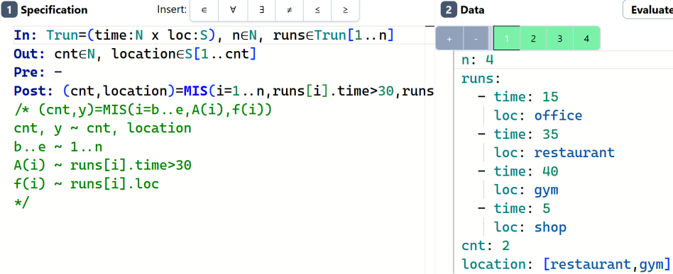
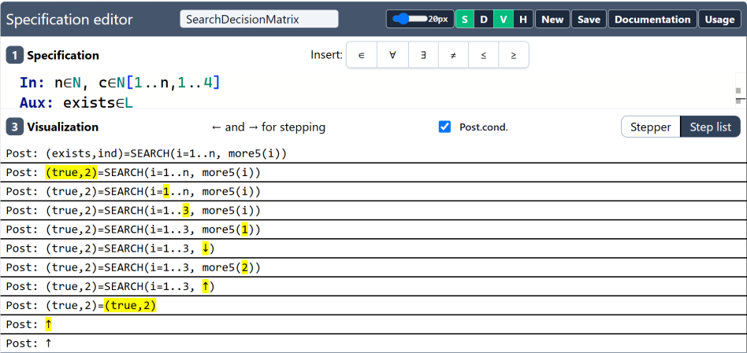

Bevezetés
Üdv A Specifikációszerkesztő könyvében! Ez teljes útmutató az ELTE
Specifikációszerkesztőhöz, a https://progalap.elte.hu/specifikacio/ címen
elérhető webalkalmazáshoz, amelyet az ELTE Informatikai Karán a
Programozás alapjai (PROGRAMMING, IP-18fPROGEG) tárgyban használunk.
A szerkesztőben egy programozási feladat formális specifikációját írod meg: milyen adat megy be, milyen jön ki, minek kell igaznak lennie a bemenetre, és milyen kapcsolatnak kell fennállnia a bemenet és a kimenet között. A szerkesztő nem csak tárolja a szöveget. Ki is értékeli a specifikációt a megadott tesztesetekre, és lépésről lépésre megmutatja, hogyan jutott az eredményre. A zöld teszt azt jelenti, hogy a specifikáció leírja a várt választ, a piros pedig azt, hogy nem.
Be: n∈N, szamok∈N[1..n]
Ki: db∈N
Ef: -
Uf: db=DARAB(i=1..n, szamok[i] mod 2 = 1)
n: 5
szamok: [3, 72, 81, 4, 5]
db: 3
A könyv végére magabiztosan fogsz olvasni és írni ilyen specifikációkat, és ennél jóval nehezebbeket is.
Kinek szól ez a könyv?
A tárgy hallgatóinak, és mindenkinek, aki a Specifikációszerkesztőt használja. Programozási előismeret nem kell. Az alapvető matematikai jelölésekkel (halmazok, intervallumok, „minden” és „létezik”) jó, ha tisztában vagy, a többit menet közben elmagyarázzuk.
Hogyan olvasd?
A fejezetek egymásra épülnek, ezért elsőre érdemes sorban haladni:
- Az Első lépések bemutatja a felületet, és néhány perc alatt végigvisz egy teljes specifikáció megírásán, tesztelésén és megosztásán.
- A specifikációs nyelv részletesen leírja a nyelvtant: blokkok, típusok, kifejezések, kvantorok, függvények.
- A Programozási tételek rész minden tételnek (
SUM,COUNT,MAX,SEARCH,MIS,CONDMAX, …) saját fejezetet szán: jelentés, pontos szintaxis, teljes példa és a szokásos hibák. - A Tesztelés és kiértékelés bemutatja a tesztadatok formátumát, a léptetőt, és hogy mit jelentenek az egyes hibaüzenetek.
- A Kidolgozott példák valódi feladatokat old meg a szövegtől a zöld tesztkészletig.
- A speci-local rész az online eszközt újraimplementáló, részletesebb hibaüzeneteket adó offline szerkesztőt mutatja be.
- A függelékek gyors referenciák: nyelvtan, jelek és billentyűparancsok, magyar–angol szójegyzék, GYIK.
Ha már kiismered magad, a keresővel (S vagy /) azonnal odaugorhatsz, amire szükséged van.
Jelölések
A specifikációt tartalmazó kódblokkok így néznek ki:
Uf: osszeg=SUM(i=1..n, szamok[i])
A teszteseteket (a szerkesztő Data paneljének tartalmát) a jobb alsó sarokban TESZT felirat jelöli:
n: 3
szamok: [1, 2, 3]
osszeg: 6
A ✗ PIROS jelölésű teszt szándékosan bukik el. Azt mutatja, mit csinál a szerkesztő, ha az adat nem illik a specifikációhoz.
A szerkesztő magyar (Be:, Ki:, Ef:, Uf:, és, vagy) és angol
(In:, Out:, Pre:, Post:, and, or) kulcsszavakat is elfogad. Ez a
kiadás főleg a magyar alakokat használja, és mindig megadja az angol párjukat
is. A C függelék minden párt felsorol.
Ezekkel a kiemelésekkel is találkozol majd:
Note
Háttér-információ, ami segít megérteni, miért van valami így.
Tip
Időt spóroló trükk vagy szokás.
Warning
Könnyen elkövethető, pontot érő hiba.
Important
A szerkesztő által kikényszerített szabály. Ha megszeged, hibát kapsz.
A könyv minden teljes példáját (specifikáció és a hozzá tartozó tesztesetek) automatikusan ellenőrizzük a speci-locallal, így bemásolhatod a szerkesztőbe, és ugyanazt az eredményt kapod. Néhány példa olyan szintaxist használ, amelyet csak az online szerkesztő ismer. Ezeket CSAK ONLINE felirat jelöli.
Források
A könyv mindazt összegyűjti, ami az eszközről tudható. Forrásai a hivatalos tárgyi segédlet (Manual for the Specification Editor tool, 3. kiadás), a szerkesztő beépített dokumentációja, sok ellenőrzött tárgyi megoldás, és kísérletekkel igazolt viselkedés. Ahol a források ellentmondtak egymásnak, az élő szerkesztő viselkedése döntött. Ami még bizonytalan, azt jelöljük.
A könyvet csabi.zip írta. A forrása a GitHubon érhető el.
A Specifikációszerkesztő
Az ELTE-n egy programozási feladat megoldása három formális szakaszra bomlik:
- Specifikáció. Leírjuk, mit kell a programnak csinálnia. Rögzítjük az állapotteret (bemeneti, segéd- és kimeneti adatok), a bemenetre vonatkozó előfeltételt, és a bemenetet a kimenettel összekötő utófeltételt.
- Algoritmus. Megtervezzük, hogyan csinálja. Általában úgy, hogy felismerünk a specifikációban egy programozási tételt, és felhasználjuk a kész algoritmusát.
- Implementáció és tesztelés. Az algoritmust lefordítjuk egy valódi programozási nyelvre, és teszteljük.
A Specifikációszerkesztő az első szakasz eszköze. A papíron megírt specifikációt nem lehet ellenőrizni, a szerkesztőben megírtat viszont futtatni lehet. A szerkesztő:
- beolvassa a specifikációt, és jelzi a szintaktikai hibákat,
- beolvassa a megadott teszteseteket, és ellenőrzi, hogy az adatok illeszkednek-e a deklarált típusokra,
- kiértékeli az előfeltételt a teszt bemenetén,
- kiértékeli az utófeltételt a teszt bemenetével és elvárt kimenetével,
- zöldre színezi a tesztet, ha minden teljesül, különben pirosra.
A kiértékelést lépésenként is meg tudja mutatni, ami nagyon hasznos, ha egy teszt váratlanul piros.
Hozzáférés
Nyisd meg a https://progalap.elte.hu/specifikacio/ címet egy böngészőben. A szerkesztőhöz ELTE-s fiók kell: ugyanazzal a felhasználónévvel és jelszóval lépsz be, amivel az egyetemi hálózatra (Caesar/INF azonosító). Belépés után a neved az ablak bal alsó sarkában jelenik meg.
Tip
A bejelentkezés néha nem működik, például közvetlenül egy határidő előtt. Az offline speci-local a saját gépeden fut, bejelentkezés nélkül, és ugyanazokat a specifikációkat fogadja el.
A fejezet tartalma
- Ismerkedés a felülettel: minden gomb és panel.
- Az első specifikációd: az üres szerkesztőtől a zöld tesztig.
- Mentés és megosztás: hogyan tartsd meg és küldd el a munkádat.
Ismerkedés a felülettel
A szerkesztő ablaka panelekre oszlik, felül egy eszköztárral. A képernyőkép számai a lenti táblázat sorainak felelnek meg.

| # | Elem | Mire való? |
|---|---|---|
| 1 | Specification panel | Ide írod a specifikációt (bal felül). |
| 2 | Data panel | Ide írod a teszteseteket (jobb oldalt). |
| 3 | Visualization panel | A kiválasztott teszteset kiértékelését mutatja (bal alul). |
| 4 | Betűméret-csúszka | A szerkesztők betűméretét állítja. |
| 5 | S | Megjeleníti/elrejti a Specification panelt. |
| 6 | D | Megjeleníti/elrejti a Data panelt. |
| 7 | V | Megjeleníti/elrejti a Visualization panelt. |
| 8 | H | Megjeleníti/elrejti a History (előzmények) panelt a korábban mentett változatokkal. |
| 9 | New | Új, üres specifikációt kezd. |
| 10 | Save | Elmenti a specifikációt a szerverre (lásd Mentés és megosztás). |
| 11 | Documentation | Megnyitja a beépített, magyar nyelvű dokumentációt (lásd E függelék). |
| 12 | Usage | Megnyitja a magyar nyelvű használati útmutatót. |
| 13 | Insert | A ∈ ∀ ∃ ≠ ≤ ≥ különleges karaktereket beszúró gombok. |
| 14 | Evaluate | Kiértékeli a specifikációt az összes tesztesetre. |
| 15 | Teszteset-fülek | Minden tesztesetnek saját füle van. A + újat ad hozzá, a - törli a kiválasztottat. Kiértékelés után a fül zöld (átment) vagy piros (elbukott) lesz. |
| 16 | Aktuális felhasználó | A neved és az azonosítód, Logout (kijelentkezés) linkkel. |
| 17 | Szerzői adatok | Készítő és verzió. |
| 18 | Feladat neve | A specifikáció címe. Mentés előtt adj nevet minden specifikációnak. |
A zöld S, D, V gombok kapcsolók: a zöld azt jelenti, hogy a panel látszik. Kis képernyőn rejtsd el, amire épp nincs szükséged. Például a Data panelt, amíg a specifikáción dolgozol.
A Specification panel
Ez egy szintaxiskiemeléses szövegszerkesztő. Ide írod a specifikációt
blokkonként (Be:, Ki:, Ef:, Uf:, …). A felette lévő Insert gombok
(13) a kurzorhoz szúrják be a matematikai jeleket. Ezeket ASCII alakban is
beírhatod:
| Jel | Gomb | Helyette írható |
|---|---|---|
∈ | ∈ | eleme (angolul element) |
∀ | ∀ | minden (angolul forall) |
∃ | ∃ | létezik (angolul exists) |
≠ | ≠ | != |
≤ | ≤ | <= |
≥ | ≥ | >= |
Ha a specifikációban hiba van, a szerkesztő megjelöli a sort, és kiír egy
üzenetet, például Line 3, column 7: Expected …. A gyakoriakat a
Hibaüzenetek és gyakori hibák fejezet magyarázza el.
A Data panel
A Data panel minden fülén egy teszteset van: a bemeneti változók értékei, és a kimeneti (meg a segéd-) változók elvárt értékei, YAML-szerű formátumban:
n: 5
szamok: [3, 72, 81, 4, 5]
db: 3
Tip
Állj egy üres tesztesetbe, és nyomd meg a Shift+Space, majd a Tab billentyűt. A szerkesztő beszúr egy sablont az összes deklarált változóval, így csak az értékeket kell kitöltened.

A Visualization panel
Az Evaluate megnyomása után ez a panel mutatja, hogyan értékelődött ki az utófeltétel a kiválasztott tesztesetre. Két nézete van:
- Stepper (léptető): egyszerre egy kiértékelési lépés. A ← és → billentyűkkel lehet lépkedni.
- Step list (lépéslista): az összes lépés egyszerre, soronként egy.
A Post.cond. jelölőnégyzet dönti el, hogy látszik-e az utófeltétel kiértékelése. A Léptető és lépéslista fejezet elmagyarázza, hogyan kell olvasni.
Az első specifikációd
Oldjunk meg egy kis feladatot teljesen, a feladat szövegétől a zöld tesztig.
Feladat. Adott n darab természetes szám. Hány páratlan van köztük?
1. lépés: az adatok
Olvasd el a feladatot, és gyűjtsd ki, mi megy be és mi jön ki:
- be: a számok darabszáma (
n) és maguk a számok (szamok), - ki: a páratlanok száma (
db).
A szerkesztőben minden adatot név ∈ halmaz alakban deklarálunk. Egy
természetes szám az N eleme, n darab, 1-től n-ig indexelt természetes szám
pedig az N[1..n] eleme:
Be: n∈N, szamok∈N[1..n]
Ki: db∈N
A változónevek kisbetűvel, a halmaznevek (N, Z, …) nagybetűvel kezdődnek.
Egy blokkon belül a deklarációkat vessző választja el.
2. lépés: az előfeltétel
Az előfeltétel azt mondja meg, minek kell igaznak lennie a bemenetre. Itt bármilyen bemenetnek van értelme, tehát az előfeltétel egyszerűen „igaz”. Ezt általában egy kötőjellel írjuk:
Ef: -
3. lépés: az utófeltétel
Az utófeltétel azt rögzíti, minek kell igaznak lennie a kimenetre. A db az
olyan 1 és n közötti i indexek száma, amelyekre szamok[i] páratlan. Ez a
megszámolás tétele, és a szerkesztőben van rá makró:
Uf: db=DARAB(i=1..n, szamok[i] mod 2 = 1)
A DARAB(i=1..n, feltétel) végigmegy az i = 1, 2, …, n értékeken, és
megszámolja, hányszor teljesül a feltétel. A mod a maradékos osztás, így a
szamok[i] mod 2 = 1 azt jelenti, hogy „szamok[i] páratlan”.
Összerakva a specifikáció így néz ki. Gépeld be a Specification panelbe (a ∈
jelhez használd az Insert gombot):
Be: n∈N, szamok∈N[1..n]
Ki: db∈N
Ef: -
Uf: db=DARAB(i=1..n, szamok[i] mod 2 = 1)
4. lépés: egy teszteset
Kattints a Data panelbe, és írj egy tesztet. Előbb a bemeneti értékek jönnek, aztán az elvárt kimenet:
n: 5
szamok: [3, 72, 81, 4, 5]
db: 3
Az öt számból három (3, 81 és 5) páratlan, ezért db: 3-at várunk.
5. lépés: kiértékelés
Nyomd meg az Evaluate gombot. A teszt füle zöld lesz: ezzel a bemenettel és ezzel a kimenettel az utófeltétel igaz.
Most nézzük meg, milyen egy hiba. Adj hozzá egy második tesztesetet a +
gombbal, és írj bele szándékosan rossz elvárást:
n: 5
szamok: [3, 72, 81, 4, 5]
db: 2
Ez a fül piros lesz: a DARAB 3-at ad, a teszt viszont 2-t mond. Nyisd meg a
Visualization panelt, és kövesd lépésről lépésre a kiértékelést.
Note
A szerkesztő nem „futtat egy programot”. Egy állítást ellenőriz: a megadott kimenet illik a megadott bemenethez. Ezért kell minden tesztesetbe az elvárt kimenetet is beírni. A választ írod le, nem kiszámolod.
6. lépés: további tesztek
Egyetlen teszt keveset bizonyít. Írj néhányat, amelyek a feladat széleit próbálgatják:
n: 3
szamok: [2, 4, 6]
db: 0
n: 0
szamok: []
db: 0
A második üres bemenet. Az üres 1..0 tartományon a DARAB értéke 0. A
Jó tesztkészlet írása fejezet megmutatja, hogyan
érdemes rendszerezetten teszteket választani.
Ugyanez angolul
A szerkesztő az angol kulcsszavakat is elfogadja. Ez a specifikáció pontosan ugyanazt jelenti:
In: n∈N, nums∈N[1..n]
Out: cnt∈N
Pre: -
Post: cnt=COUNT(i=1..n, nums[i] mod 2 = 1)
n: 5
nums: [3, 72, 81, 4, 5]
cnt: 3
Az In, Out, Pre, Post a bemenet, kimenet, előfeltétel és
utófeltétel angol neve, a COUNT pedig a DARAB angol megfelelője.
Hogyan tovább?
Megírtál, teszteltél és kiértékeltél egy teljes specifikációt. A következő alfejezet megmutatja, hogyan mentsd el. Utána a II. rész egyenként, részletesen elmagyarázza a nyelv elemeit.
Mentés és megosztás
Mentés
- Adj nevet a specifikációnak az ablak tetején lévő feladatnév mezőben (például ParatlanDb).
- Kattints a Save gombra.
A specifikáció az összes tesztesetével együtt az ELTE szerverére kerül. Mentés után megváltozik az oldal címe: egy egyedi azonosítót tartalmaz.
https://progalap.elte.hu/specifikacio/v1/?uuid=058de53d-56cd-4733-93f1-8f4cf2212a86
Ez a cím az elmentett változat állandó linkje (permalink).
Important
A Save gomb csak akkor aktív, ha van mit menteni. Csak hibátlan specifikációt ments: olyat, ami beolvasható, és átmegy a tesztjein.
Megosztás
Ha meg akarod osztani a munkádat (beadáshoz, vagy hogy segítséget kérj egy oktatótól), mentés után másold ki a címet a böngésző címsorából, és küldd el. Aki megnyitja a linket, a specifikációt az összes tesztesetével együtt látja, és ki is értékelheti.
Példák a hivatalos tárgyi anyagból:
| Feladat | Link |
|---|---|
| Az első páratlan szám kiválasztása | ecacc1f7-… |
| Páratlanok megszámolása | 058de53d-… |
| Sikertelen keresés | 3cacade4-… |
(A megnyitásukhoz be kell jelentkezned.)
Előzmények
Minden mentés új változatot hoz létre. A H gomb megnyitja a History panelt, ahol visszatérhetsz a specifikáció korábban mentett változataihoz.
Új specifikáció
A New gomb kiüríti a szerkesztőt egy új feladathoz. Ha meg akarod tartani az aktuálisat, előbb mentsd el.
Tip
Ha a saját gépeden is szeretnél másolatot, vagy ELTE-s bejelentkezés nélkül osztanál meg egy specifikációt, használd a speci-localt. Sima
.spfájlokba ment, és egy egész projektet a tesztekkel együtt egyetlen szövegsorként tud kimásolni.
A specifikáció felépítése
A specifikáció blokkok sorozata. Minden blokk egy fejléccel (kulcsszó és kettőspont) kezdődik, és a feladat egy részét írja le:
| Blokk | Magyar | Angol | Kötelező | Tartalom |
|---|---|---|---|---|
| Bemenet | Be: | In: | igen | A bemeneti adatok deklarációi. |
| Segédadatok | Sa: | Aux: | nem | Az utófeltétel által használt segédadatok deklarációi. |
| Kimenet | Ki: | Out: | igen | A kimeneti adatok deklarációi. |
| Függvények | Fv: | Fn: | nem | Segédfüggvények definíciói. |
| Előfeltétel | Ef: | Pre: | igen | Logikai állítás a bemenetről. |
| Utófeltétel | Uf: | Post: | igen | A bemenetet és a kimenetet összekötő logikai állítás. |
Matematikailag a deklarációs blokkok a feladat állapotterét adják meg: a bemeneti, segéd- és kimeneti értékek összes lehetséges kombinációjának halmazát. Az előfeltétel kiválasztja az értelmes bemeneteket, az utófeltétel pedig mindegyikhez a helyes kimeneteket.
Íme egy specifikáció, amely mind a hat blokkot használja:
Be: n∈N, k∈N, arak∈N[1..n]
Sa: van∈L, ind∈N
Ki: elso∈Z
Fv: olcso:N->L, olcso(i)=arak[i]<k
Ef: n≥1
Uf: (van,ind)=SEARCH(i=1..n, olcso(i)) és
(van -> elso=ind) és
(nem van -> elso=-1)
n: 4
k: 100
arak: [250, 90, 120, 40]
van: true
ind: 2
elso: 2
n: 2
k: 10
arak: [250, 90]
van: false
elso: -1
Így olvasd: adott n, k és n darab ár, ahol n legalább 1; az elso kimenet az
első k-nál kisebb ár indexe, vagy −1, ha nincs ilyen. Ha a SEARCH még nem
világos, nem baj. A saját fejezete a Keresés.
A fejezet tartalma
- Blokkok és elrendezés: a fejlécek írásmódja, a blokkok sorrendje, egysoros és többsoros elrendezés.
- Nevek, megjegyzések, foglalt szavak: milyen nevek megengedettek, és hogyan írjunk megjegyzést.
- A minden-változó szabály: az ellenőrzés, amin egyszer mindenki fennakad.
Blokkok és elrendezés
A fejlécek írásmódja
A fejlécek kis- és nagybetű-érzékenyek, és pontosan így kell írni őket:
| Magyar | Angol | Jelentés |
|---|---|---|
Be: | In: | bemenet |
Sa: | Aux: | segédadat |
Ki: | Out: | kimenet |
Fv: | Fn: | függvény |
Ef: | Pre: | előfeltétel |
Uf: | Post: | utófeltétel |
Az olyan alakok, mint a be:, a BE:, az Ef : (szóköz a kettőspont előtt)
vagy a Bemenet:, nem fejlécek, és a szerkesztő szintaktikai hibát jelez
náluk.
Warning
A segédadatok fejléce
Sa:, nemSegéd:. A kézenfekvő fordítás rossz, a szerkesztő így válaszol rá:Expected ",", "Aux:", "Ki:", "Out:", "Sa:", new line, or white space but "S" found.
Tip
Ha nem vagy biztos benne, mit lehet egy adott helyre írni, nézd meg a hibaüzenetet: felsorolja, mit várt ott a szerkesztő. A fenti üzenetből például kiderül, hogy deklarációs lista után csak vessző vagy egy újabb deklarációs blokk jöhet.
A blokkok sorrendje
Elöl a deklarációs blokkok, a végén a logikai állítások:
Be/In → Sa/Aux → Ki/Out → Fv/Fn → Ef/Pre → Uf/Post
Figyelj: a kimenet blokkja a feltételek előtt van. A Ki: deklarálja az
eredményt, nem az utolsó blokk. A nem használt blokkokat (Sa:, Fv:)
egyszerűen elhagyjuk.
Egy specifikáción belül keverheted a magyar és angol fejléceket, de ne tedd. Egy fájlban maradj egy nyelvnél.
„A” elrendezés: minden egy sorban
A tartalom a fejléc után, ugyanabban a sorban, egy szóközzel elválasztva is jöhet:
Be: n∈N, szamok∈Z[1..n]
Ki: s∈Z
Ef: -
Uf: s=SUM(i=1..n, szamok[i])
n: 3
szamok: [4, -1, 10]
s: 13
A hivatalos segédlet a záró szóközt a fejléc részének tekinti: „In: (there
is a space at the end of the string)”. Ebben az elrendezésben a szóköz
kötelező.
„B” elrendezés: a fejléc külön sorban
A fejléc állhat egyedül is, a tartalom pedig a következő sorokban jön. A magyar tárgyi megoldásokban gyakori, soronként egy deklarációval:
Be:
n∈N,
k∈N,
ar∈N[1..n]
Ki:
db∈N
Ef:
n>=1 és k>=1
Uf:
db=DARAB(i=1..n, ar[i]<k)
n: 4
k: 100
ar: [250, 90, 120, 40]
db: 2
Ennek az elrendezésnek a szabályai:
- A blokk utolsó deklarációja kivételével mindegyik vesszővel zárul, ugyanúgy, mintha egy sorban lennének.
- Üres sor állhat a blokkok között, sőt egy blokkon belül a deklarációk között is.
- A fejléc továbbra is kis- és nagybetű-érzékeny.
Hosszú feltételek
Az elő- és utófeltétel több sorra is tördelhető. A sort egy műveleti jellel,
például és-sel zárd, hogy egyértelmű legyen: az állítás folytatódik.
Be: n∈N, x∈Z[1..n]
Ki: poz∈N, neg∈N
Ef: -
Uf: poz=DARAB(i=1..n, x[i]>0) és
neg=DARAB(i=1..n, x[i]<0)
n: 5
x: [3, -2, 0, 7, -9]
poz: 2
neg: 2
A folytatósorok behúzása csak az olvashatóságot szolgálja.
Több függvény
Egy Fv: blokk több függvényt is definiálhat, vesszővel elválasztva. Minden
definíció egy szignatúrából és a törzsből áll:
Be: n∈N, x∈N[1..n]
Ki: s∈N
Fv: negyzet:N->N, negyzet(a)=a*a,
paros:N->L, paros(a)=a mod 2 = 0
Ef: -
Uf: s=SUM(i=1..n, negyzet(x[i]), paros(x[i]))
n: 4
x: [1, 2, 3, 4]
s: 20
Az online szerkesztő minden függvénynek külön Fv: fejlécet is elfogad. A
beépített dokumentációja is így van megírva:
Be: n∈N, x∈N[1..n]
Ki: s∈N
Fv: negyzet:N->N, negyzet(a)=a*a
Fv: paros:N->L, paros(a)=a mod 2 = 0
Ef: -
Uf: s=SUM(i=1..n, negyzet(x[i]), paros(x[i]))
A speci-local egyetlen Fv: blokkot enged, ezért a vesszős alak az, ami
mindenhol működik.
A függvényekről részletesen a Függvények fejezet szól.
Nevek, megjegyzések, foglalt szavak
Változónevek
A változónév
- kisbetűvel kezdődik,
- betűkkel és számjegyekkel folytatódik,
- nem tartalmaz szóközt és írásjelet (
-,., …).
| Helyes | Hibás | Miért hibás? |
|---|---|---|
szamok, x1, latogatasDb | Szamok | nagybetűvel kezdődik (az halmaznév) |
szam, ar, tav | latogatas db | szóközt tartalmaz |
r1, maxert | 1x | számjeggyel kezdődik |
osztok, db | max-ert | - van benne (kivonásnak olvassa) |
Ékezetes betűk (á, é, ő, …) is lehetnek a nevekben, a beépített
dokumentáció is használja őket (név, jegy). Sokan mégis kerülik, mert
egyes billentyűzeteken nehézkes beírni őket.
Halmaznevek (típusnevek)
A halmazok neve, a beépítetteké (N, Z, R, L, S, C) és a sajátjaidé
(Saját halmaznevek) is, nagybetűvel kezdődik:
Hallgato, Jegy, Seta.
Foglalt szavak
Néhány kisbetűs szó a nyelv része, ezért nem lehet változónév:
| Szó | Jelentés |
|---|---|
és, vagy, nem | logikai műveletek |
and, or, not | ugyanezek angolul |
mod | maradékos osztás |
element | a ∈ szóalakja |
exists, forall | a ∃ és a ∀ szóalakja |
true, false | logikai konstansok |
Warning
Ne nevezz el változót
exists-nek, akkor sem, ha régi képernyőképek és segédletek így tesznek:Aux: exists∈L. A mostani szerkesztő elutasítja, ezzel a rejtélyes üzenettel:incomplite type for exists: undefined is not boolean. Használd helyette avanvagytalaltnevet, és nevezd át mindenhol: a deklarációban, az utófeltételben és minden tesztesetben.
A tételek makrói nagybetűsek (SUM, MAX, COUNT, …), ezért a kisbetűs
sum, max, min és count lehetnek változónevek:
Be: n∈N, x∈N[1..n]
Ki: sum∈N, max∈N
Ef: n>0
Uf: sum=SUM(i=1..n, x[i]) és (,max)=MAX(i=1..n, x[i])
n: 3
x: [4, 9, 2]
sum: 15
max: 9
Megjegyzések
Kétféle megjegyzés van, mindkettő a C nyelvből:
// …a sorvégi megjegyzés, a sor végéig tart. Állhat valódi tartalom után is ugyanabban a sorban./* … */a blokkmegjegyzés, amely több soron át is tarthat.
/* Egy szám osztóinak száma.
i|n jelentése: i osztója n-nek. */
Be: n∈N
Ki: d∈N
Ef: n>=1 // a 0-nak végtelen sok osztója lenne
Uf: d=DARAB(i=1..n, i|n)
n: 12
d: 6
A tárgyi megoldásokban bevett szokás, hogy megjegyzésben leírják a tétel általános alakját, és megfeleltetik a konkrét neveknek:
Uf: (db,helyek)=MIS(i=1..n, futas[i].ido>30, futas[i].hely)
/* (db,y)=MIS(i=e..u, T(i), f(i))
db, y ~ db, helyek
e..u ~ 1..n
T(i) ~ futas[i].ido>30
f(i) ~ futas[i].hely
*/
A beépített dokumentáció /** … */ alakot is használ a címekhez. Ez közönséges
blokkmegjegyzés.
Szóközök
A műveleti jelek körüli szóközök elhagyhatók: a sum = SUM(…) és a
sum=SUM(…) ugyanazt jelenti. Egy kivétel van: a direkt szorzat x jele
(rekordok, függvényszignatúrák) mindkét oldalán szóköz kell: Z x Z.
A minden-változó szabály
Important
Minden bemeneti változónak szerepelnie kell az utófeltételben. A szerkesztő ellenőrzi ezt, és ha nem teljesül, elutasítja a specifikációt.
A szabály mögötti gondolat: ha egy bemenet nem befolyásolja az eredményt, akkor vagy nem is igazi bemenet, vagy az utófeltétel megfeledkezett róla. A hivatalos segédlet szerint: „The postcondition must include all declared data.”, vagyis az utófeltételnek minden deklarált adatot tartalmaznia kell.
Milyen a hibaüzenet?
Be: n∈N, x∈N[1..n], egyeb∈N
Ki: s∈N
Ef: egyeb>0
Uf: s=SUM(i=1..n, x[i])
A szerkesztő válasza:
Line 1, column 21: egyeb is missing from the post condition!
Három részlet az üzenetről:
- A változó deklarációjára mutat, nem az utófeltételre. Ha a
Be:blokkon belül látsz piros jelet, az azt jelenti: „ezt a bemenetet sehol nem használod”. - Ha a változó csak az előfeltételben szerepel, az nem számít, ahogy a
példában az
egyeb>0mutatja. - Ez az ellenőrzés minden más után fut le. Ha csak ezt a hibát kapod, a specifikáció többi része szintaktikailag rendben van.
„Közvetett” használat
Egy változó akkor is használtnak számít, ha az utófeltételben bárhol
megjelenik: ciklushatárként, indexben, vagy egy olyan függvényben, amit az
utófeltétel meghív. Itt az n csak a tartomány felső határa, a k pedig csak a
függvényben szerepel:
Be: n∈N, k∈N, x∈N[1..n]
Ki: c∈N
Fv: nagy:N->L, nagy(i)=x[i]>k
Ef: -
Uf: c=DARAB(i=1..n, nagy(i))
n: 4
k: 5
x: [3, 8, 6, 1]
c: 2
A hézag kitöltése: n=n
Néha egy tételnek tényleg nincs szüksége valamelyik bemenetre. A tipikus eset a
SELECT, amelynek nincs felső határa. Ilyenkor írj egy
mindig igaz azonosságot az utófeltételbe:
Be: n∈N, szamok∈Z[1..n]
Ki: ind∈N
Ef: ∃i∈[1..n]:(szamok[i] mod 2 = 1)
Uf: ind=SELECT(i≥1, szamok[i] mod 2 = 1) és n=n
n: 5
szamok: [23, 25, 26, 28, 29]
ind: 1
Az n=n mindig igaz, tehát nem változtat a jelentésen, de így az n szerepel
az utófeltételben. Ha több változó is kimarad, fűzd őket egymás után:
… és n=n és k=k.
Note
A szabály a bemeneti változókra vonatkozik. A segéd- és kimeneti változókat az utófeltétel amúgy is megköti, hiszen éppen arra valók.
Típusok és adatok
Minden változót egy halmaz elemeként deklarálunk:
a∈N
Így olvasd: „a a természetes számok halmazának egy eleme”. A halmaz a típus szerepét tölti be. A szerkesztő ez alapján ellenőrzi a tesztadatokat, és ez korlátozza, milyen értéket vehet fel a változó.
A ∈ jelet az Insert gombbal szúrhatod be, vagy írhatod helyette az
element szót (az online szerkesztőben az eleme szót is):
Be: a element N, b∈Z
Ki: c∈Z
Ef: -
Uf: c=a+b
a: 3
b: -5
c: -2
A használható halmazok néhány egyszerű építőelemből állnak össze:
| Fajta | Példa | Fejezet |
|---|---|---|
| Elemi halmazok | N, Z, R, L, S, C | Elemi halmazok és intervallumok |
| Intervallumok | [1..10] | Elemi halmazok és intervallumok |
| Tömbök (sorozatok) | N[1..n], Z[] | Tömbök |
| Mátrixok | Z[1..n,1..m] | Mátrixok és tömbök tömbjei |
| Rekordok (direkt szorzatok) | (nev:S x kor:N) | Rekordok és tuple-ök |
| Saját nevek | Hallgato=(nev:S x jegy:N) | Saját halmaznevek |
Az elemek szabadon kombinálhatók, például rekordok tömbjévé, amelynek a mezői maguk is tömbök.
Elemi halmazok és intervallumok
Elemi halmazok
| Halmaz | Neve | Értékek | Példa | Tesztadat |
|---|---|---|---|---|
N | természetes számok | 0, 1, 2, … | a∈N | a: 7 |
Z | egész számok | …, −1, 0, 1, … | b∈Z | b: -3 |
R | valós számok | pl. 3.14 | c∈R | c: 2.5 |
L | logikai értékek | true, false | d∈L | d: true |
S | szövegek | pl. “alma” | e∈S | e: alma vagy e: "alma" |
C | karakterek | pl. ‘x’ | f∈C | f: 'x' |
A C magyar neve, a K (karakter) is használható: f2∈K.
Note
Az
Ntartalmazza a 0-t. Ha egy mennyiségnek pozitívnak kell lennie, mondd ki az előfeltételben:Ef: n>0. Ha egy érték negatív is lehet (például egy „−1, ha nincs ilyen” eredmény),Z-ként deklaráld, neN-ként.
Egy példa, amely többet is használ közülük:
Be: nev∈S, kor∈N, magassag∈R
Ki: felnott∈L
Ef: magassag>0
Uf: felnott=(kor≥18) és nev=nev és magassag=magassag
nev: Anna
kor: 19
magassag: 1.68
felnott: true
nev: "Bence"
kor: 12
magassag: 1.45
felnott: false
Intervallumok
Az intervallum két határ közötti egész számok halmaza, a határokat is beleértve:
iv∈[1..3]
Az iv értéke 1, 2 vagy 3 lehet. A határok más bemeneti változókat tartalmazó
kifejezések is lehetnek: [2+3..n*2].
Az intervallumok kis, rögzített tartományokra valók, például jegyekre vagy hónapokra:
Be: jegy∈[1..5]
Ki: atment∈L
Ef: -
Uf: atment=(jegy≥2)
jegy: 4
atment: true
Az intervallumon kívüli érték bukott tesztesetet ad, mert az adat nem illik a deklarált típusra:
jegy: 6
atment: true
Az intervallumok a kvantorokban is megjelennek, ∀i∈[1..n]:(…) alakban (lásd
Kvantorok), és a tömbök indextartományaként is, erről
a következő alfejezet szól.
Tömbök
A tömb (indexelt sorozat) sok azonos típusú értéket tárol, mindegyiket egy indexen keresztül érjük el. Először az elemek halmazát írjuk, utána szögletes zárójelben az indextartományt:
x∈N[1..3]
Az x három természetes számból álló sorozat, 1, 2, 3 indexekkel. Az elemei:
x[1], x[2], x[3].
A tömbdeklaráció formái
| Deklaráció | Jelentés |
|---|---|
x1∈N[1..3] | pontosan 3 elem, 1..3 indexekkel |
x2∈N[-1..1] | 3 elem, −1, 0, 1 indexekkel |
n∈N, x∈Z[1..n] | n elem, ahol n is bemenet (a tárgyban szokásos forma) |
x3∈N[1..] | tetszőleges hosszú, 1-től indexelve; a hosszát a tesztadat dönti el |
x4∈N[0..] | tetszőleges hosszú, 0-tól indexelve |
x5∈N[] | az N[1..] rövidítése |
x6∈N[]=[5,1,2] | konstans tömb kezdőértékkel |
x7∈N[2+3..n*2] | a határok egyszerű kifejezések is lehetnek |
A leggyakoribb a harmadik: a hossz (n) bemenet, a tömb pedig N[1..n]. A
szerkesztő ilyenkor ellenőrzi, hogy a tesztadatnak tényleg n eleme van-e.
Be: n∈N, hom∈Z[1..n]
Ki: s∈Z
Ef: -
Uf: s=SUM(i=1..n, hom[i])
n: 4
hom: [-3, 2, 5, -1]
s: 3
Ha az adat hossza nem egyezik n-nel, a teszt elbukik:
n: 3
hom: [-3, 2, 5, -1]
s: 3
Hossz és határok: length, from, to
Nyitott tartományú tömb (N[1..], N[]) méretét a specifikációban le lehet
kérdezni:
| Függvény | Online szerkesztőben magyarul | Eredmény |
|---|---|---|
length(x) | hossz(x) | az elemek száma |
from(x) | tól(x) | az első index |
to(x) | ig(x) | az utolsó index |
Be: x∈Z[]
Ki: s∈Z
Ef: -
Uf: s=SUM(i=1..length(x), x[i])
x: [10, 20, 30]
s: 60
A from és a to segítségével a specifikáció bármilyen indextartományra
működik. Itt a bemenet 0-tól indexelt:
Be: x∈Z[0..]
Ki: s∈Z
Ef: -
Uf: s=SUM(i=from(x)..to(x), x[i])
x: [10, 20, 30]
s: 60
Note
A
hossz,tól,igmagyar nevek a szerkesztő beépített dokumentációjában szerepelnek. A speci-local csak az angol neveket ismeri.
Indexelés
Az x[i] az i indexű elem. Az index tetszőleges kifejezés lehet: x[i+1],
x[n], x[-i]. Az indextartományon kívüli olvasás kiértékelési hiba. Ez
gyakran szomszédok összehasonlításánál fordul elő:
// rossz: i=n esetén x[i+1] nem létezik
Uf: c=DARAB(i=1..n, x[i]<x[i+1])
// jó: eggyel előbb álljunk meg
Uf: c=DARAB(i=1..n-1, x[i]<x[i+1])
Konstans tömbök
A kezdőértékkel megadott tömb rögzített adat, amely a feladat része, például egy keresőtábla:
Be: napok∈N[1..12]=[31,28,31,30,31,30,31,31,30,31,30,31], h∈[1..12]
Ki: d∈N
Ef: -
Uf: d=napok[h]
napok: [31,28,31,30,31,30,31,31,30,31,30,31]
h: 4
d: 30
A Kártyaértékek kidolgozott példa ugyanezt a technikát szövegekkel használja.
Tömbliterálok
Feltételekben közvetlenül is írhatunk tömböket, de erre ritkán van szükség:
[1, 2, 3]=[1, 2, 3]
[0..:1, 2, 3] // literál megadott indextartománnyal: 0..2 indexek
A második alakot, az indextartományos literált, csak az online szerkesztő érti.
Mátrixok és tömbök tömbjei
Mátrixok
A mátrixnak (kétdimenziós tömbnek) két indextartománya van, vesszővel elválasztva:
m1∈Z[1..8,1..8]
Ez egy 8×8-as egész mátrix. Egy elemét mindkét indexszel, egy zárójelpárban
címezzük: m1[3,6] a 3. sor 6. eleme.
| Deklaráció | Jelentés |
|---|---|
m1∈Z[1..8,1..8] | 8×8-as mátrix |
m2∈Z[1..n,1..m] | n×m-es mátrix, n és m bemenet |
m3∈Z[0..,0..] | tetszőleges méretű, 0-tól indexelve; a méretet az adat dönti el |
m4∈Z[,] | a Z[1..,1..] rövidítése |
m5∈Z[-1..1,-1..1]=[[2,1,2],[1,0,1],[2,1,1]] | mátrix kezdőértékkel |
A tesztadatban a mátrix sorok listája:
Be: n∈N, m∈N, t∈Z[1..n,1..m]
Ki: s∈Z
Ef: -
Uf: s=SUM(i=1..n, SUM(j=1..m, t[i,j]))
n: 2
m: 3
t: [
[1, 2, 3],
[4, 5, 6]
]
s: 21
Ugyanez egy sorban is működik: t: [[1,2,3],[4,5,6]].

Tömbök tömbjei
Warning
Az
m∈Z[1..n,1..m]és azm∈Z[1..n][1..m]nem ugyanaz. Az első mátrix,m[i,j]alakban indexeljük. A második sorozatok sorozata,m[i][j]alakban indexeljük. Nem cserélhetők fel egymással.
A tömbök tömbje akkor hasznos, ha a sorok különböző hosszúak. Ezt a „cikkcakkos” szerkezetet mátrix nem tudja leírni. A legtisztább, ha a sor típusának nevet adunk:
Be: sorok∈Sor[], Sor=N[]
Ki: ossz∈N
Ef: -
Uf: ossz=SUM(i=1..length(sorok), length(sorok[i]))
sorok: [[1, 2, 3], [4], [], [5, 6]]
ossz: 6
Itt a sorok[i] maga is tömb, ezért a length(sorok[i]) az i-edik sor
hossza, a sorok[i][j] pedig egy elem.
Kvantorok mátrixokon
Egy mátrix bejárása két egymásba ágyazott ciklus. A kvantorok és a tételek ugyanígy ágyazhatók egymásba. Ez azt mondja, hogy „minden sorban van 10-es”:
Be: n∈N, m∈N, t∈N[1..n,1..m]
Ki: jo∈L
Ef: -
Uf: jo=FORALL(i=1..n, EXISTS(j=1..m, t[i,j]=10))
n: 2
m: 3
t: [[10, 1, 2], [3, 10, 10]]
jo: true
n: 2
m: 3
t: [[10, 1, 2], [3, 4, 5]]
jo: false
A Yossarian térképe kidolgozott példa egy mátrix maximumát keresi meg.
Rekordok és tuple-ök
Rekordok
A rekord (struktúra) különböző típusú értékeket fog össze egy egységbe. A
specifikációban a mezők halmazainak direkt szorzata, a mezők között x
jellel:
r1∈(nev:S x jegy:N)
Az r1 az S × N egy eleme, egy név–jegy pár. A mezőket ponttal érjük el:
r1.nev, r1.jegy.
| Deklaráció | Jelentés |
|---|---|
r1∈nev:S x jegy:N | a zárójel elhagyható |
r2∈(nev:S x jegy:N) | a szokásos forma |
r3∈(eszak:L x kelet:L x del:L x nyugat:L) | tetszőleges számú mező |
r4∈(a:[1..2] x b:[3..4]) | a mezők intervallumok is lehetnek: r4 az (1,3), (1,4), (2,3), (2,4) egyike |
Important
Az
xmindkét oldalán szóköz kell:nev:S x jegy:N.
A tesztadatban a rekord többsoros YAML alakban vagy tömör {…} alakban írható:
Be: r∈(nev:S x jegy:N)
Ki: atment∈L
Ef: r.jegy≥1 és r.jegy≤5
Uf: atment=(r.jegy≥2)
r:
nev: Anna
jegy: 4
atment: true
r: {nev: Bence, jegy: 1}
atment: false
Rekordok tömbje
A legtöbb valódi feladatban rekordok tömbje szerepel: hallgatók listája, mérések sorozata. Átláthatóbb, ha a rekord típusát előbb elnevezzük (lásd Saját halmaznevek):
Be: n∈N, h∈Hallgato[1..n], Hallgato=(nev:S x jegy:N)
Ki: c∈N
Ef: ∀i∈[1..n]:(1≤h[i].jegy≤5)
Uf: c=DARAB(i=1..n, h[i].jegy=5)
n: 3
h:
- nev: Anna
jegy: 5
- nev: Bence
jegy: 3
- nev: Cili
jegy: 5
c: 2
n: 2
h: [{nev: Anna, jegy: 2}, {nev: Bence, jegy: 4}]
c: 0
A h[i].jegy jelentése: „a h i-edik elemének jegy mezője”.
Warning
A tesztadat mezőneveinek pontosan egyezniük kell a deklarációval, kis- és nagybetűre is: a
jegynemJegy.
Tuple-ök
A tuple (rendezett n-es) rekord deklarálása nélkül fog össze értékeket:
(3, 5). A komponenseit 1-től számozzuk: (3, 5).1 = 3, (3, 5).2 = 5.
Be: a∈Z, b∈Z
Ki: jo∈L
Ef: -
Uf: jo=((a, b).2=b és (a, b)=(a, b))
a: 3
b: 5
jo: true
Tuple típusú változót nem lehet deklarálni, de a tuple-ök a programozási
tételek lényegéhez tartoznak: sok tétel egyszerre több értéket ad vissza. A
MAX egy (index, érték) párt, a SEARCH egy (van, index) párt. Szétszedni úgy
lehet őket, hogy a bal oldalra változókból álló tuple-t írunk:
Be: n∈N, x∈Z[1..n]
Ki: ind∈N, ert∈Z
Ef: n>0
Uf: (ind, ert)=MAX(i=1..n, x[i])
n: 4
x: [3, 9, -2, 9]
ind: 2
ert: 9
Ha egy pozíciót üresen hagysz, azt a komponenst figyelmen kívül hagyod: az
(ind,)=MAX(…) csak az indexet tartja meg, a (,ert)=MAX(…) csak az értéket.
A részletek a Maximum- és minimumkiválasztás fejezetben
vannak.
A függvények is visszaadhatnak tuple-t: csere:Z x Z->Z x Z, csere(a,b)=(b,a).
A tételek eredményének komponensei névvel is elérhetők, például a MAX-nál
a .maxval és a .maxind. A Yossarian térképe példa
ezt használja.
Saját halmaznevek
Bármelyik halmaznak nevet adhatunk Nev=Halmaz alakban. A név nagybetűvel
kezdődik, és a definíció a változók mellé, egy deklarációs blokkba kerül:
Be: j∈Jegy, Jegy=[1..5]
Ki: jo∈L
Ef: -
Uf: jo=(j≥2)
j: 3
jo: true
A definícióhoz =-t használj, ne :=-t.
Miért adjunk nevet?
A nevek olvashatóvá teszik a bonyolult adatokat. Hasonlítsd össze ezt:
h1∈(nev:S x jegy:N)[1..]
ezzel:
h2∈Hallgato[1..], Hallgato=(nev:S x jegy:N)
A második elmondja, mi az adat. Az elnevezett halmazt több helyen is
használhatod: más deklarációkban, függvényszignatúrákban
(jegy:Hallgato->N), és más elnevezett halmazok belsejében.
Láncok és beágyazás
A nevek más nevekre is hivatkozhatnak, így akár hosszú átnevezési láncok is készülhetnek:
Be: j2∈Erdemjegy, Erdemjegy=EgytolOtig, EgytolOtig=[1..5]
Ki: jo∈L
Ef: -
Uf: jo=(j2=j2)
j2: 5
jo: true
Egymásba is ágyazhatók, így mély szerkezetek is leírhatók. Ebben a példában minden hallgatónak jegylistája van:
Be: csop∈Csoport, Csoport=Hallgato[], Hallgato=(nev:S x jegyek:Jegy[]), Jegy=[1..5]
Ki: c∈N
Ef: -
Uf: c=DARAB(i=1..length(csop), length(csop[i].jegyek)>0)
csop:
- nev: Anna
jegyek: [5, 4, 5]
- nev: Bence
jegyek: []
c: 1
A definíció állhat az első használat előtt és után is. A beépített
dokumentáció a j∈Jegy, Jegy=[1..5] alakot használja. Egyes tárgyi megoldások
előre veszik a rekord definícióját: In: Trun=(time:N x loc:S), n∈N, runs∈Trun[1..n].
Hová kerülnek a definíciók?
A definíciók a deklarációs blokkokba (Be:, Sa:, Ki:) kerülnek, a
változóktól vesszővel elválasztva. Szokás szerint abba a blokkba tesszük őket,
ahol először szükség van rájuk, általában a Be:-be.
Kifejezések és logika
Az előfeltétel és az utófeltétel logikai állítás: olyan kifejezés, amelynek
értéke true (igaz) vagy false (hamis). Ezekből épül fel:
- értékek: változók, konstansok (
3,-1,2.5,"szöveg",true), tömbelemek (x[i]), mezők (r.nev), tuple-ök ((3,5)), - műveletek: aritmetikai (
+ - * / mod), összehasonlító (= ≠ < > ≤ ≥) és logikai (és vagy nem →), - kvantorok:
∀(minden) és∃(létezik), - függvényhívások: beépített (
length(x)) vagy saját (f(i)), - tételmakrók:
SUM,COUNT,MAX, … (a III. részben).
Be: n∈N, x∈Z[1..n]
Ki: jo∈L
Ef: n>0
Uf: jo=(∀i∈[1..n]:(x[i]≥0) és x[1] mod 2 = 0)
n: 3
x: [4, 7, 0]
jo: true
n: 3
x: [4, -7, 0]
jo: false
A fejezet tartalma
- Műveletek: aritmetika, összehasonlítás és logika, magyar és ASCII alakokkal.
- Kvantorok: ∀ és ∃: állítások sok elemről egyszerre.
- Előfeltételek írása: mi kerüljön az
Ef:-be.
Műveletek
Aritmetika
| Művelet | Jelentés | Példa |
|---|---|---|
+ - * | összeadás, kivonás, szorzás | a+b*2 |
/ | osztás | s/n |
mod vagy % | maradékos osztás | x mod 2 = 1, i%2=1 |
- (előjel) | ellentett | -x[i] |
ABS(…) | abszolút érték | ABS(x[i]) |
A szokásos precedencia érvényes (* előbb, mint +), és a zárójelek
szabadon használhatók.
Összehasonlítás
| Jel | ASCII | Jelentés |
|---|---|---|
= | = | egyenlő |
≠ | != | nem egyenlő |
< | < | kisebb |
> | > | nagyobb |
≤ | <= | kisebb vagy egyenlő |
≥ | >= | nagyobb vagy egyenlő |
| | osztója: a|b jelentése b mod a = 0 |
Mindkét alak elfogadott, így egy teljes specifikációt be lehet gépelni egy
átlagos billentyűzeten: 1<=n és n<=100.
Az összehasonlítások a matematikához hasonlóan láncolhatók: a 2≤a≤7
jelentése 2≤a és a≤7.
Be: a∈Z
Ki: benne∈L
Ef: -
Uf: benne=(2≤a≤7)
a: 5
benne: true
a: 8
benne: false
Az oszthatósági reláció, a |, tömören fejezi ki az osztókat:
Be: n∈N
Ki: d∈N
Ef: n≥1
Uf: d=DARAB(i=1..n, i|n)
n: 12
d: 6
Logika
| Művelet | Angolul | Jelentés |
|---|---|---|
és | and | mindkettő igaz |
vagy | or | legalább az egyik igaz |
nem | not | tagadás |
→ vagy -> | implikáció (következtetés) | |
igaz, hamis | true, false | konstansok |
Note
Az
igazés ahamismagyar konstans a szerkesztő beépített dokumentációjából származik. A speci-local nem fogadja el őket. Ha azt szeretnéd, hogy a specifikációd mindkettőben működjön, használd atrue/falsealakot.
Implikáció
Az A → B („ha A, akkor B”) csak akkor hamis, ha A igaz és B hamis:
| A | B | A → B |
|---|---|---|
| igaz | igaz | igaz |
| igaz | hamis | hamis |
| hamis | igaz | igaz |
| hamis | hamis | igaz |
Ha A hamis, az implikáció B-től függetlenül igaz. Ezért az implikáció a feltételes követelmények eszköze: „ha találtunk ilyet, akkor a kimenet a neve, ha nem, akkor mindegy, mi a kimenet”.
Be: n∈N, x∈Z[1..n]
Sa: van∈L, ind∈N
Ki: neg∈Z
Ef: -
Uf: (van,ind)=SEARCH(i=1..n, x[i]<0) és
(van → neg=x[ind])
n: 3
x: [5, -2, -8]
van: true
ind: 2
neg: -2
n: 2
x: [5, 2]
van: false
neg: 0
A második tesztben nem találtunk semmit, így a neg bármi lehet. Erről a
Keresés fejezetben bővebben is olvashatsz.
Precedencia
A legerősebbtől a leggyengébbig: aritmetika, összehasonlítások, nem, és,
vagy, →. Ha bizonytalan vagy, tegyél zárójelet. Semmibe sem kerül:
Ef: n>0 és (3<4 vagy ((3)>4))
Tip
Egy állításon belül ne keverd a magyar és angol műveleteket (
a vagy b and c). Beolvasható, de nehéz olvasni.
Logikai értékek mint adatok
Egy L típusú változó közönséges érték: összehasonlítható és kombinálható,
mint bármi más.
Be: a∈L, b∈L
Ki: x∈L
Ef: -
Uf: x=(a és nem b)
a: true
b: false
x: true
Kvantorok: ∀ és ∃
A kvantorokkal egyetlen állítás szólhat egy intervallum minden eleméről, vagy arról, hogy legalább egy elemére teljesül valami. Ezekre épül az előfeltételek és sok utófeltétel gerince.
Az univerzális kvantor: ∀
∀i∈[1..3]:(i>0)
Így olvasd: minden i-re, ami [1..3] eleme, teljesül, hogy i > 0. Az általános alak:
∀változó∈[tól..ig]:(állítás)
Leggyakrabban egy tömb indexeinek bejárására használjuk:
Be: n∈N, x∈Z[1..n]
Ki: mindNagy∈L
Ef: -
Uf: mindNagy=∀i∈[1..n]:(x[i]>10)
n: 3
x: [11, 25, 12]
mindNagy: true
n: 3
x: [11, 5, 12]
mindNagy: false
Az egzisztenciális kvantor: ∃
∃i∈[1..3]:(i=2)
Így olvasd: létezik olyan i [1..3]-ban, amelyre i = 2. Tömböknél ez azt mondja ki, hogy valamelyik elemnek megvan egy tulajdonsága:
Be: n∈N, x∈Z[1..n]
Ki: vanKicsi∈L
Ef: -
Uf: vanKicsi=∃i∈[1..n]:(x[i]<3)
n: 4
x: [7, 9, 2, 8]
vanKicsi: true
Szóalakok
A jelek szóval is írhatók:
| Jel | Angol szó | Magyar szó |
|---|---|---|
∀ | forall | minden |
∃ | exists | létezik |
∈ | element | eleme |
Be: n∈N, x∈N[1..n]
Ki: jo∈L
Ef: -
Uf: jo=forall i element [1..n]:(x[i]>0)
n: 2
x: [1, 2]
jo: true
A magyar szóalakok a beépített dokumentációból származnak, és csak az online szerkesztő ismeri őket:
Be: n∈N, x∈N[1..n]
Ki: jo∈L
Ef: igaz
Uf: jo=minden i eleme [1..n]:(x[i]>0) és létezik i eleme [1..n]:(x[i]=1)
Nyitott hosszúságú tömbök
Ha a tömb hossza nem bemenet, a határokat a tömbtől kérdezzük le:
Be: x∈N[]
Ki: vanKicsi∈L
Ef: -
Uf: vanKicsi=(∃i∈[1..length(x)]:(x[i]<3) és ∃i∈[from(x)..to(x)]:(x[i]<3))
x: [5, 1, 9]
vanKicsi: true
Beágyazás
A kvantorok egymásba ágyazhatók, például hogy egy mátrix minden soráról és a soron belüli elemekről mondjunk valamit. Minden sorban van 10-es:
Be: m∈N[1..3,1..3]
Ki: jo∈L
Ef: -
Uf: jo=∀i∈[1..3]:(∃j∈[1..3]:(m[i,j]=10))
m: [[10, 0, 0], [0, 10, 0], [1, 2, 10]]
jo: true
A belső kvantor hivatkozhat a külső változójára. x nem csökkenő sorrendű, vagyis minden elem legfeljebb akkora, mint bármelyik későbbi:
Be: n∈N, x∈Z[1..n]
Ki: rendezett∈L
Ef: -
Uf: rendezett=∀i∈[1..n]:(∀j∈[i+1..n]:(x[i]≤x[j]))
n: 4
x: [1, 3, 3, 8]
rendezett: true
n: 4
x: [1, 3, 2, 8]
rendezett: false
Üres tartományok
Ha az intervallum üres (például [1..0], amikor n = 0):
- a
∀igaz: nincs olyan elem, amely megsértené az állítást, - a
∃hamis: nincs olyan elem, amely teljesítené.
Ezt folyamatosan használni fogod. A ∀j∈[1..i-1]:(…) azt jelenti, „semmi sem
volt i előtt, ami…”, és i = 1-re automatikusan igaz.
Be: n∈N, x∈Z[1..n]
Ki: a∈L, e∈L
Ef: -
Uf: a=∀i∈[1..n]:(x[i]>0) és e=∃i∈[1..n]:(x[i]>0)
n: 0
x: []
a: true
e: false
Kvantor vagy tétel?
A ∀i∈[1..n]:(β(i)) és a FORALL(i=1..n, β(i)) ugyanazt jelenti, ahogy a
∃i∈[1..n]:(β(i)) és az EXISTS(i=1..n, β(i)) is. A kvantoros alak az
előadásokon használt matematikai jelölés. A makrós alak megnevezi a
programozási tételt (eldöntés), és jelzi az olvasónak, melyik algoritmust kell
használni. Lásd Eldöntés.
Előfeltételek írása
Az előfeltétel (Ef:, angolul Pre:) állítás a bemenetről. Igaznak
kell lennie ahhoz, hogy a feladatnak értelme legyen. Ha egy teszteset bemenete
megsérti, a teszt piros, bármi is a kimenet.
Az előfeltétel blokkja kötelező. Ha a feladat semmilyen megszorítást nem tesz a bemenetre, írd az alábbi egyenértékű alakok egyikét:
Ef: -
Ef: true
Ef: nem false
Ef: 3=3
A kötőjel a megszokott forma.
Tipikus előfeltételek
Egyedi értékek tartománya. a 2 és 7 között van. Három egyenértékű alak:
Ef: a∈[2..7]
Ef: 2≤a≤7
Ef: a≥2 és a≤7
Pozitív méret. Legalább egy elem van:
Ef: n>0
Megszorítás minden elemre. Minden ár 1 és 10 000 között van:
Ef: ∀i∈[1..n]:(1≤ar[i]≤10000)
Bemenetek közötti kapcsolat. 1 < d < n:
Ef: 1<d<n
Garancia, amelyre az utófeltétel épít. Van páratlan szám, ezt a
SELECT igényli:
Ef: ∃i∈[1..n]:(szamok[i] mod 2 = 1)
Több állítás és-sel kapcsolható össze. Ne felejtsd ki köztük a műveleti
jelet: két egymás után írt állítás szintaktikai hiba.
Példa
Adott n ≥ 1 gyerek magassága centiméterben (mindegyik 50 és 250 között). Mennyi az átlagmagasság?
Be: n∈N, m∈N[1..n]
Ki: atlag∈R
Ef: n≥1 és ∀i∈[1..n]:(50≤m[i]≤250)
Uf: atlag=SUM(i=1..n, m[i])/n
n: 4
m: [120, 130, 125, 135]
atlag: 127.5
Az előfeltételt megsértő bemenet piros tesztet ad:
n: 2
m: [120, 300]
atlag: 210
Warning
A határokat egyenként másold ki a feladatból. A túl laza előfeltétel soha nem okoz piros tesztet. A tesztjeid átmennek, miközben a specifikáció a feladat által tiltott bemeneteket is elfogadja. Az
Ef:minden számát vesd össze a feladat szövegével.
Ami nem az előfeltételbe való
- Állítás a kimenetről. Az előfeltétel csak a bemenetet korlátozza.
- Amit a típus már garantál. Az
n∈Nmár kizárja a −1-et, így azn≥0semmit sem tesz hozzá. - Maga a válasz. Akkor is, ha tudod, hogy „a válasz létezik”, az utófeltételnek meg kell mondania, mi az.
Függvények
Az Fv: blokk (angolul Fn:) segédfüggvényeket definiál, ugyanúgy, ahogy a
középiskolai matematikában. Először jön a szignatúra az értelmezési
tartománnyal és az értékkészlettel (halmazok), aztán a hozzárendelési szabály:
Fv: f:N->N, f(p)=p*2
Így olvasd: f természetes számokhoz természetes számokat rendel, és f(p) = 2p.
A blokk nem kötelező. Leginkább összetett feladatokhoz kell, ahol egy programozási tétel egy másikba ágyazódik (lásd Tételek függvényekben). Egyszerű feladatoknál is jól olvashatóbbá teheti az utófeltételt egy jól elnevezett függvény.
Szintaxis
Fv: név:Értelmezési_tartomány->Értékkészlet, név(paraméterek)=kifejezés
- A szignatúra, a
név:ÉT->ÉK, adja meg a halmazokat. - Vessző után jön a definíció:
név(paraméterek)=kifejezés. - Több paraméter: az értelmezési tartomány direkt szorzat
xjellel (mindkét oldalán szóköz!), példáulZ x Z. - Több eredmény: az értékkészlet is direkt szorzat, a törzs pedig tuple-t ad vissza.
Tip
A nyilat ASCII alakban,
->-ként írd. Az Insert sávon nincs nyíl gomb, és a Unicode→-ról volt olyan jelzés, hogy a szignatúrában hibát okoz. A képernyőképeken látható nyilak valószínűleg a szerkesztő betűtípusa által rajzolt->jelek. A->mindig működik.
Példák
| Definíció | Jelentés |
|---|---|
f:N->N, f(p)=p*2 | kétszerező függvény |
negyzet:Z->N, negyzet(n)=n*n | beszédesebb név |
add:Z x Z->Z, add(a,b)=a+b | két paraméter |
csere:Z x Z->Z x Z, csere(a,b)=(b,a) | tuple-t ad vissza |
f2:Z->Z, f2(p)=p+n | az n bemeneti változót használja |
jegy:Hallgato->N, jegy(h)=h.jegy | rekordparaméter |
index:N[] x N->N, index(x,i)=x[i] | tömbparaméter |
paros:N->L, paros(i)=x[i] mod 2 = 0 | logikai függvény |
Egy teljes példa:
Be: n∈N, x∈Z[1..n]
Ki: s∈N
Fv: negyzet:Z->N, negyzet(a)=a*a
Ef: -
Uf: s=SUM(i=1..n, negyzet(x[i]))
n: 3
x: [1, -2, 3]
s: 14
A bemeneti változók láthatók
A függvény minden deklarált változót lát, nem csak a paramétereit. Az alábbi
példában a nagy a k bemenetre és az x tömbre hivatkozik. Ez nagyon
gyakori: a függvények többnyire csak az indexet kapják paraméterként, minden
mást maguk néznek meg.
Be: n∈N, k∈N, x∈N[1..n]
Ki: c∈N
Fv: nagy:N->L, nagy(i)=x[i]>k
Ef: -
Uf: c=DARAB(i=1..n, nagy(i))
n: 5
k: 10
x: [4, 12, 10, 30, 11]
c: 3
Ha egy paraméter neve megegyezik egy deklarált változóéval, a paraméter eltakarja azt: a függvényen belül a név a paramétert jelenti.
Több eredményt adó függvény
Be: a∈Z, b∈Z
Ki: c∈Z, d∈Z
Fv: csere:Z x Z->Z x Z, csere(p,q)=(q,p)
Ef: -
Uf: (c,d)=csere(a,b)
a: 3
b: 8
c: 8
d: 3
Több függvény
Egy Fv: blokkban több definíciót vesszővel választhatsz el. Mindegyik
használhatja az előtte állókat:
Be: n∈N, x∈N[1..n]
Ki: c∈N
Fv: paros:N->L, paros(v)=v mod 2 = 0,
jo:N->L, jo(i)=paros(x[i]) és x[i]>0
Ef: -
Uf: c=DARAB(i=1..n, jo(i))
n: 5
x: [0, 2, 3, 8, 7]
c: 2
Rekordparaméter
Be: n∈N, h∈Hallgato[1..n], Hallgato=(nev:S x jegy:N)
Ki: s∈N
Fv: jegy:Hallgato->N, jegy(e)=e.jegy
Ef: -
Uf: s=SUM(i=1..n, jegy(h[i]))
n: 2
h: [{nev: Anna, jegy: 5}, {nev: Bence, jegy: 3}]
s: 8
Tételek függvényekben
A függvények igazi ereje a feladat felbontása. Ha egy feladatban az egyik tétel a másikba ágyazódik, tedd a belsőt egy függvénybe. Így az utófeltételben tisztán látszik a külső tétel, a függvényben pedig a belső.
A táblázat a tárgyi anyagban leggyakrabban előforduló kombinációkat gyűjti össze. Mindegyik szerepel teljes példaként a könyv későbbi részében.
| Függvény | Belső tétel | Hol szerepel? |
|---|---|---|
maxoszl:N->N x N, maxoszl(i)=MAX(j=1..m, terkep[i,j]) | az i. sor maximuma | Yossarian térképe |
ossz:N->N, ossz(i)=SUM(j=i-d..i-1, tr[j]) | az előző d érték összege | Trurl robotjai |
tobb5:N->L, tobb5(i)=FORALL(j=1..4, kave[i,j]>5) | az i. sor minden eleme > 5 | Catbert kávészünetei |
kev5:N->L, kev5(i)=EXISTS(j=1..4, kave[i,j]<5) | az i. sor valamelyik eleme < 5 | |
latog:N->N, latog(i)=DARAB(j=1..n, hely[j]=i) | hányszor fordul elő i | |
uj:N->L, uj(i)=FORALL(j=1..i-1, v[i].ido≠v[j].ido) | az i. érték nem fordult elő korábban | További rövid példák |
kes:N->L, kes(j)=FORALL(i=1..n, kesesek[i,j]>k) | a j. oszlop minden eleme > k | További rövid példák |
Példa: tulajdonságú sorok
Egy konferencia n napig tartott, naponta négy kávészünettel. Hány napon fogyott minden szünetben 5 liternél több kávé?
A külső tétel a megszámolás (hány nap?), a belső az eldöntés (minden szünet 5 felett volt?):
Be: n∈N, kave∈N[1..n,1..4]
Ki: c∈N
Fv: tobb5:N->L, tobb5(i)=FORALL(j=1..4, kave[i,j]>5)
Ef: -
Uf: c=DARAB(i=1..n, tobb5(i))
n: 3
kave: [
[4, 5, 7, 5],
[6, 8, 7, 9],
[6, 6, 7, 8]
]
c: 2
Példa: melyik érték hányszor fordul elő?
n látogatást jegyeztek fel, mindegyik az 1..k helyek egyikére történt. Melyik helyet látogatták a legtöbbször?
A külső tétel egy maximum a helyeken. A függvény egy hely látogatásait számolja meg:
Be: n∈N, k∈N, hely∈N[1..n]
Ki: legjobb∈N
Fv: latog:N->N, latog(p)=DARAB(j=1..n, hely[j]=p)
Ef: k≥1 és ∀i∈[1..n]:(1≤hely[i]≤k)
Uf: (legjobb,)=MAX(p=1..k, latog(p))
n: 6
k: 3
hely: [2, 3, 2, 1, 2, 3]
legjobb: 2
Tip
Feladatolvasáskor figyeld a „minden egyes … hány / legnagyobb / van-e” szerkezetet. A minden egyes általában a külső ciklust jelzi, az egyes elemekről feltett kérdés pedig a belső tételt, amiből függvény lesz.
Lehet függvény nélkül is?
Igen. Egy tétel közvetlenül is állhat egy másik belsejében:
Be: n∈N, kave∈N[1..n,1..4]
Ki: c∈N
Ef: -
Uf: c=DARAB(i=1..n, FORALL(j=1..4, kave[i,j]>5))
n: 2
kave: [[6, 6, 6, 6], [6, 1, 6, 6]]
c: 1
A jelentés ugyanaz. A tárgyban mégis a függvényes változat a javasolt, mert megnevezi a belső tételt, és egyértelművé teszi az algoritmus tervezését (minden beágyazott tétel egy függvény lesz).
Utófeltételek és tételek
Az utófeltétel (Uf:, angolul Post:) a specifikáció legfontosabb része.
Logikai állítás a bemenetről és a kimenetről, és pontosan akkor igaz, ha a
kimenet helyes válasz a bemenetre. Minden bemeneti változót említenie kell
(lásd A minden-változó szabály).
Minden utófeltételt meg lehetne írni pusztán kvantorokkal, az Utófeltétel tételek nélkül fejezet meg is mutatja, hogyan. A tárgy feladatainak többsége azonban néhány szabványos programozási tétel példánya. Mindegyik egy algoritmikus minta, ismert és bizonyított algoritmussal. A szerkesztőben mindegyikhez tartozik egy makró, így az utófeltétel közvetlenül megnevezheti a mintát:
Be: n∈N, szamok∈N[1..n]
Ki: osszeg∈N
Ef: -
Uf: osszeg=SUM(i=1..n, szamok[i])
n: 4
szamok: [5, 1, 4, 2]
osszeg: 12
A tétel felismerése a feladatban maga az algoritmustervezés: ha az utófeltétel
SUM-ot mond, az algoritmus az összegzés algoritmusa.
A tételek áttekintése
A táblázatban a β(i) egy i-től függő logikai feltétel, az f(i) pedig egy
i-ből kiszámolt érték.
| Tétel | Angolul | Makró | Eredmény |
|---|---|---|---|
| Összegzés | summation | s=SUM(i=e..u, f(i))s=SUM(i=e..u, f(i), β(i)) | szám |
| Megszámolás | counting | c=DARAB(i=e..u, β(i)) (vagy COUNT) | természetes szám |
| Maximumkiválasztás | maximum selection | (ind,ert)=MAX(i=e..u, f(i)) | (index, érték) |
| Minimumkiválasztás | minimum selection | (ind,ert)=MIN(i=e..u, f(i)) | (index, érték) |
| Eldöntés | decision | l=EXISTS(i=e..u, β(i)) | logikai |
| Eldöntés (mind) | decision (all) | l=FORALL(i=e..u, β(i)) | logikai |
| Kiválasztás | selection | ind=SELECT(i≥e, β(i)) | index |
| Keresés | search | (van,ind)=SEARCH(i=e..u, β(i)) | (logikai, index) |
| Másolás | copy | y=COPY(i=e..u, f(i)) | tömb |
| Kiválogatás | multiple item selection | (db,y)=MIS(i=e..u, β(i))(db,y)=MIS(i=e..u, β(i), f(i)) | (darabszám, tömb) |
| Feltételes maximumkeresés | conditional maximum | (van,ind,ert)=CONDMAX(i=e..u, f(i), β(i)) | (logikai, index, érték) |
| Feltételes minimumkeresés | conditional minimum | (van,ind,ert)=CONDMIN(i=e..u, f(i), β(i)) | (logikai, index, érték) |
Minden makró első argumentuma ugyanaz: a ciklustartomány, i=e..u. Ez
megnevezi a ciklusváltozót (bármilyen kisbetűs név: i, j, p, …), és
megadja az intervallumot, amelyet bejár. Kivétel a SELECT: annak csak
kezdőpontja van, i≥e.
Melyik tétel kell?
Abból indulj ki, mit kérdez a feladat. Milyen választ vár?
- Egyetlen számot, amelyet az összes elemből számolunk
- az összegüket →
SUM - hány elem teljesít egy feltételt →
DARAB/COUNT - a legnagyobbat vagy a legkisebbet
- az összes elem közül →
MAX/MIN - csak a feltételt teljesítők közül →
CONDMAX/CONDMIN
- az összes elem közül →
- az összegüket →
- Igen vagy nem választ
- Egy elemet (az indexét), amelynek megvan egy tulajdonsága
- biztosan létezik →
SELECT - lehet, hogy nem létezik
- az elsőt →
SEARCH - az utolsót →
SEARCHvisszafelé
- az elsőt →
- biztosan létezik →
- Több elemet
- mindet, átalakítva →
COPY - csak az adott tulajdonságúakat →
MIS - csak az adott tulajdonságúakat, átalakítva →
MIShárom argumentummal
- mindet, átalakítva →
Ha egy elem tulajdonsága maga is sok elemre vonatkozó kérdés (például „a nap minden kávészünetében 5 liternél több fogyott”), két egymásba ágyazott tétel kell. Lásd Tételek összeépítése.
Egy tételmakró olvasása
Vegyük a db=DARAB(i=1..n, szamok[i] mod 2 = 1) makrót:
| Rész | Jelentés |
|---|---|
db= | az eredmény a db kimeneti változóhoz kötődik |
DARAB | a tétel: megszámolás |
i=1..n | az i ciklusváltozó az 1, 2, …, n értékeken fut végig |
szamok[i] mod 2 = 1 | minden i-re ellenőrzött feltétel |
Ha egy tétel több értéket ad vissza, a bal oldal változókból álló tuple:
(ind, ert)=MAX(…). Egy pozíciót üresen hagyva azt az értéket figyelmen kívül
hagyod: (ind,)=MAX(…) vagy (van,,ert)=CONDMAX(…).
A tételek és-sel kapcsolhatók
Egy utófeltételben több tétel is lehet, mindegyik a saját kimeneteit köti meg:
Be: n∈N, x∈Z[1..n]
Ki: s∈Z, c∈N
Ef: -
Uf: s=SUM(i=1..n, x[i]) és c=DARAB(i=1..n, x[i]<0)
n: 4
x: [3, -1, -4, 10]
s: 8
c: 2
Egy későbbi tétel felhasználhatja egy korábbinak az eredményét, például egy segédváltozót. Így írjuk le a többlépéses feladatokat. Lásd Tételek összeépítése.
Összegzés: SUM
Az összegzés egy értéket ad össze egy indextartományon.
Alak: s=SUM(i=e..u, f(i))
Szűrt alak: s=SUM(i=e..u, f(i), β(i))
Eredmény: szám, f(e) + f(e+1) + … + f(u) (szűrő esetén csak azok a tagok, ahol β(i) teljesül)
Üres tartomány: 0
Példa: egy tömb összege
Tudjuk, hogy n napon át mennyi pénzt költöttünk naponta. Mennyit költöttünk összesen?
Be: n∈N, koltes∈N[1..n]
Ki: ossz∈N
Ef: -
Uf: ossz=SUM(i=1..n, koltes[i])
n: 5
koltes: [1200, 0, 3500, 800, 450]
ossz: 5950
n: 0
koltes: []
ossz: 0
Az összegzett érték bármilyen kifejezés lehet
Az f(i) nem csak tömbelem lehet, hanem i bármilyen kifejezése:
Be: n∈N
Ki: s∈N
Ef: -
Uf: s=SUM(i=1..n, i*i)
n: 4
s: 30
A szűrt alak
Egy harmadik argumentummal, egy feltétellel, csak azok a tagok adódnak össze, amelyekre a feltétel teljesül. A páros elemek összege:
Be: n∈N, x∈N[1..n]
Ki: s∈N
Ef: -
Uf: s=SUM(i=1..n, x[i], x[i] mod 2 = 0)
n: 5
x: [1, 2, 3, 4, 10]
s: 16
Az n osztóinak összege a szűrőt az oszthatósági relációval, a | jellel
kombinálja:
Be: n∈N
Ki: s∈N
Ef: n≥1
Uf: s=SUM(i=1..n, i, i|n)
n: 12
s: 28
Warning
Minden megszorítás kerüljön a szűrőbe. Az „n páratlan osztóinak összege” két feltételt tartalmaz. A
SUM(i=1..n, i, i mod 2 = 1)n-ig minden páratlan számot összead (n = 10-re 25-öt) a páratlan osztók (1 + 5 = 6) helyett. A helyes szűrő:i mod 2 = 1 és i|n.
Be: n∈N
Ki: s∈N
Ef: n≥1
Uf: s=SUM(i=1..n, i, i mod 2 = 1 és i|n)
n: 10
s: 6
A tömb egy ablaka
A tartománynak nem kell a teljes tömböt lefednie. Az i index előtti d érték
összege: SUM(j=i-d..i-1, x[j]). Ez a Trurl robotjai
feladat belső része.
Átlag
Átlagra nincs külön makró. Oszd el az összeget a darabszámmal:
Be: n∈N, x∈N[1..n]
Ki: atlag∈R
Ef: n>0
Uf: atlag=SUM(i=1..n, x[i])/n
n: 4
x: [2, 3, 5, 6]
atlag: 4
Gyakori hibák
- Túl szűk az eredmény típusa. Ha az összeadott értékek negatívak is
lehetnek, az eredmény
Zlegyen, neN. Ha valós számok, akkorR. - A szűrő a második argumentum. A
SUM(i=1..n, β(i), f(i))sorrendje rossz. Elöl az érték, utána a feltétel, fordítva, mint a háromargumentumosMIS-nél.
Megszámolás: COUNT / DARAB
A megszámolás megmondja, egy tartomány hány indexére teljesül egy feltétel.
Alak: c=DARAB(i=e..u, β(i))
Angolul: c=COUNT(i=e..u, β(i))
Eredmény: természetes szám: azoknak az e..u-beli i-knek a száma, amelyekre β(i) teljesül
Üres tartomány: 0
Példa: páratlan számok
Be: n∈N, szamok∈N[1..n]
Ki: db∈N
Ef: -
Uf: db=DARAB(i=1..n, szamok[i] mod 2 = 1)
n: 5
szamok: [3, 72, 81, 4, 5]
db: 3
n: 3
szamok: [2, 4, 6]
db: 0
Ez a hivatalos tárgyi példa, angol kulcsszavakkal (megnyitás a szerkesztőben).
DARAB és COUNT
A DARAB („hány darab?”) pontosan ugyanazt jelenti, mint a COUNT.
Hány osztója van egy számnak?
Be: szam∈N
Ki: osztok∈N
Ef: szam>=1
Uf: osztok=DARAB(i=1..szam, i|szam) // i osztója szam-nak
szam: 12
osztok: 6
szam: 13
osztok: 2
Megszámolás összetett feltétellel
A feltétel tetszőleges logikai kifejezés lehet: összehasonlíthat szomszédokat, hívhat függvényt, tartalmazhat kvantort. Hányszor emelkedett a hőmérséklet egyik napról a másikra?
Be: n∈N, t∈Z[1..n]
Ki: emel∈N
Ef: -
Uf: emel=DARAB(i=1..n-1, t[i]<t[i+1])
n: 6
t: [3, 5, 4, 4, 8, 9]
emel: 3
Figyeld meg az 1..n-1 tartományt: i = n-re a t[i+1] nem létezne.
DARAB vagy SUM?
A DARAB(i=e..u, β(i)) ugyanaz, mint a SUM(i=e..u, 1, β(i)): minden
illeszkedő indexre 1-et adunk hozzá. Mégis a DARAB-ot használd, mert
megnevezi a tételt.
Gyakori hibák
- Csak egy argumentum jöhet a tartomány után. A
DARABpontosan a tartományt és egy feltételt kap. Ha értéket is számolnál, valószínűlegSUMkell. - Értéket számolsz feltétel helyett. A
DARAB(i=1..n, x[i])hibás, ha azxszámokat tartalmaz. A második argumentumnak igaznak vagy hamisnak kell lennie.
Maximum- és minimumkiválasztás: MAX, MIN
A maximumkiválasztás megkeresi egy kifejezés legnagyobb értékét egy tartományon, és azt is, hol veszi fel. A minimumkiválasztás ugyanezt teszi a legkisebbel.
Alak: (ind,ert)=MAX(i=e..u, f(i)) és (ind,ert)=MIN(i=e..u, f(i))
Eredmény: pár: az ind index, ahol f a legnagyobb (legkisebb), és az ert = f(ind) érték
Egyenlőség esetén: az első ilyen index
Üres tartomány: nem megengedett, az előfeltételnek garantálnia kell legalább egy elemet
Példa: a legmelegebb nap
Be: n∈N, t∈Z[1..n]
Ki: nap∈N, hom∈Z
Ef: n>0
Uf: (nap,hom)=MAX(i=1..n, t[i])
n: 5
t: [12, 17, 9, 17, 3]
nap: 2
hom: 17
A maximum, a 17, a 2. és a 4. napon fordul elő. A MAX az elsőt választja, a
2. napot.
n: 5
t: [12, 17, 9, 17, 3]
nap: 4
hom: 17
Csak az egyik eredmény megtartása
Hagyj egy üres pozíciót a tuple-ben:
| Írás | Eredmény |
|---|---|
(ind,ert)=MAX(…) | mindkettő |
(ind,)=MAX(…) | csak az index (figyeld a záró vesszőt) |
(,ert)=MAX(…) | csak az érték |
Be: n∈N, t∈Z[1..n]
Ki: leghidegebb∈Z
Ef: n>0
Uf: (,leghidegebb)=MIN(i=1..n, t[i])
n: 4
t: [3, -2, 8, -2]
leghidegebb: -2
Egy kifejezés maximuma
Az f(i) bármilyen kifejezés lehet. Melyik napon volt a legnagyobb a
változás az előző naphoz képest?
Be: n∈N, t∈Z[1..n]
Ki: nap∈N
Ef: n≥2
Uf: (nap,)=MAX(i=2..n, ABS(t[i]-t[i-1]))
n: 5
t: [10, 12, 4, 6, 7]
nap: 3
A komponensek elérése névvel
A MAX eredménye közvetlenül használható egy kifejezésben. A részei a
.maxind és a .maxval nevet viselik. Ez akkor hasznos, ha a maximum egy
függvényből jön:
Be: n∈N, t∈Z[1..n]
Ki: v∈Z
Ef: n>0
Uf: v=MAX(i=1..n, t[i]).maxval
n: 3
t: [4, 9, 1]
v: 9
A Yossarian térképe ezzel keresi meg egy mátrix maximumát.
Gyakori hibák
- Hiányzó előfeltétel. A semmi maximuma nem létezik.
n∈Nesetén azn: 0teszt lehetséges, ezért az előfeltételnekn>0-t kell mondania. - Elfelejtett tuple. Az
m=MAX(i=1..n, x[i])egy számot hasonlít össze egy párral. Írd így:(,m)=MAX(…). - Az értékbe rejtett feltétel. „A legnagyobb páros szám” nem
MAX, mert a maximum lehet páratlan is. Használd aCONDMAX-ot.
Eldöntés: EXISTS, FORALL
Az eldöntés igen/nem kérdésre válaszol egy tartományról: van-e olyan index,
amelynek megvan egy tulajdonsága (EXISTS), vagy mindegyiknek megvan-e
(FORALL).
Alak: l=EXISTS(i=e..u, β(i)) és l=FORALL(i=e..u, β(i))
Eredmény: logikai érték (L)
Üres tartomány: az EXISTS hamis, a FORALL igaz
Egyenértékű kvantorok: ∃i∈[e..u]:(β(i)) és ∀i∈[e..u]:(β(i))
EXISTS: van-e…?
Van-e páratlan szám a számok között?
Be: n∈N, szamok∈N[1..n]
Ki: paratlan∈L
Ef: -
Uf: paratlan=EXISTS(i=1..n, szamok[i] mod 2 = 1)
n: 4
szamok: [2, 8, 7, 4]
paratlan: true
n: 3
szamok: [2, 8, 4]
paratlan: false
FORALL: minden…?
Minden szám pozitív?
Be: n∈N, szamok∈Z[1..n]
Ki: pozitiv∈L
Ef: -
Uf: pozitiv=FORALL(i=1..n, szamok[i]>0)
n: 3
szamok: [5, 1, 9]
pozitiv: true
n: 3
szamok: [5, 0, 9]
pozitiv: false
A kettő összefügg
„Nem minden elem pozitív” ugyanaz, mint „van olyan elem, amely nem pozitív”:
nem FORALL(i=1..n, β(i)) = EXISTS(i=1..n, nem β(i))
Azt használd, amelyik természetesebben hangzik a feladatban.
Makró vagy kvantor?
Be: n∈N, x∈Z[1..n]
Ki: a∈L, b∈L
Ef: -
Uf: a=EXISTS(i=1..n, x[i]<0) és b=∃i∈[1..n]:(x[i]<0)
n: 3
x: [4, -1, 2]
a: true
b: true
A kettő mindig ugyanazt adja. A különbség a szándékban van. A makró azt mondja: „ez az eldöntés tétele, az eldöntés algoritmusával kell megvalósítani”. A kvantor tisztán logikai állítás. Az előfeltételekben általában a kvantort, a kimenetet definiáló utófeltételekben a makrót használjuk.
Építőelemként
Az eldöntés gyakran egy összetett feladat belső része. Keress egy napot,
amikor minden kávészünetben 5 liternél több fogyott: ez egy keresés, amelynek
a feltétele egy FORALL. Lásd Catbert kávészünetei.
Be: n∈N, kave∈N[1..n,1..4]
Ki: vanIlyenNap∈L
Fv: tobb5:N->L, tobb5(i)=FORALL(j=1..4, kave[i,j]>5)
Ef: -
Uf: vanIlyenNap=EXISTS(i=1..n, tobb5(i))
n: 2
kave: [[6, 6, 6, 5], [7, 8, 9, 6]]
vanIlyenNap: true
Kiválasztás: SELECT
A kiválasztás megkeresi az első olyan indexet egy adott kezdőponttól, ahol egy feltétel teljesül, ha tudjuk, hogy ilyen index létezik.
Alak: ind=SELECT(i≥e, β(i))
Eredmény: a legkisebb i ≥ e, amelyre β(i) teljesül
Követelmény: az előfeltételnek garantálnia kell, hogy ilyen i létezik
A többi tétellel ellentétben a SELECT-nek nincs felső határa, csak azt
mondja meg, honnan induljon. Éppen ezért kell garantálni a létezést: nélküle a
keresés soha nem érne véget.
Példa: az első páratlan szám
Ez a hivatalos tárgyi példa (megnyitás a szerkesztőben):
Be: n∈N, szamok∈Z[1..n]
Ki: ind∈N
Ef: ∃i∈[1..n]:(szamok[i] mod 2 = 1)
Uf: ind=SELECT(i≥1, szamok[i] mod 2 = 1) és n=n
n: 5
szamok: [23, 25, 26, 28, 29]
ind: 1
n: 4
szamok: [2, 4, 7, 9]
ind: 3
Két dolgot érdemes megfigyelni:
- Az előfeltétel, az
∃i∈[1..n]:(szamok[i] mod 2 = 1), garantálja, hogy van páratlan szám. Nélküle aSELECThibás lenne. és n=n: aznnem szerepel aSELECT-ben (nincs felső határ), ezért kell azn=nazonosság a minden-változó szabály teljesítéséhez.
A páratlan szám nélküli bemenet megsérti az előfeltételt, így a teszt piros:
n: 2
szamok: [2, 4]
ind: 1
Kiválasztás tömb nélkül
A SELECT természetes választás az „első adott tulajdonságú szám” kérdésekre,
ha a válasz matematikailag garantált. n legkisebb 1-nél nagyobb osztója
(n ≥ 2 esetén maga az n mindig osztó):
Be: n∈N
Ki: d∈N
Ef: n≥2
Uf: d=SELECT(i≥2, i|n)
n: 35
d: 5
n: 13
d: 13
SELECT vagy SEARCH?
SELECT | SEARCH | |
|---|---|---|
| Garantált a találat? | igen, az előfeltétel szerint | nem |
| Tartomány | csak kezdőpont: i≥e | i=e..u |
| Eredmény | az index | (van-e?, index) |
Ha az előfeltételben nem tudod igazolni, hogy van találat, használd a
SEARCH-et.
Keresés: SEARCH
A (lineáris) keresés az első olyan indexet keresi egy tartományban, ahol egy feltétel teljesül. Azt is megmondja, van-e egyáltalán ilyen.
Alak: (van,ind)=SEARCH(i=e..u, β(i))
Eredmény: pár. A van logikai érték, amely megmondja, teljesíti-e β(i)-t valamelyik e..u-beli i, az ind pedig az első ilyen i
Ha nincs találat: a van hamis, az ind-nek nincs jelentése
A van változót deklarálni kell, általában a Sa: blokkban (ha a feladat csak
az indexet kéri), vagy a Ki: blokkban (ha azt is kérdezi, van-e találat).
Példa: az első negatív szám
Be: n∈N, x∈Z[1..n]
Sa: van∈L
Ki: ind∈N
Ef: -
Uf: (van,ind)=SEARCH(i=1..n, x[i]<0)
n: 5
x: [3, 8, -2, 7, -5]
van: true
ind: 3
n: 3
x: [3, 8, 7]
van: false
ind: 0
Warning
Ne nevezd el a jelzőt
exists-nek. Régi segédletek és képernyőképek azAux: exists∈Lalakot használják, de azexistsfoglalt szó (a∃ASCII alakja), és a mostani szerkesztő elutasítja:incomplite type for exists: undefined is not boolean. Használd avanvagytalaltnevet.
Mennyi az ind, ha nincs találat?
Ha a van hamis, az ind-nek nincs értelmes értéke. Az utófeltétel csak
sikeres keresés esetén mond róla valamit. A gyakorlatban:
- A szerkesztő lépéslistája szerint a ciklusindex túlfut a végén, ezért
n+1-et mutat (például n = 3 eseténind: 4). - A tesztesetekben
ind: 0-t vagyind: n+1-et szokás írni. Mindkettő átmegy, és az is, ha azindkimarad a tesztesetből.
n: 3
x: [3, 8, 7]
van: false
ind: 4
A kimenet függjön az eredménytől
Gyakran a feladat valami származtatott értéket kér a talált elemből, és csak akkor, ha van ilyen elem. Erre az implikáció való. Tedd zárójelbe:
Be: n∈N, nevek∈S[1..n], korok∈N[1..n]
Sa: van∈L, ind∈N
Ki: nev∈S
Ef: -
Uf: (van,ind)=SEARCH(i=1..n, korok[i]<18) és
(van → nev=nevek[ind])
n: 3
nevek: [Anna, Bence, Cili]
korok: [21, 17, 15]
van: true
ind: 2
nev: Bence
n: 2
nevek: [Anna, Dani]
korok: [21, 30]
van: false
nev: ""
Ha nincs találat, a van → … igaz, bármi is a nev.
Warning
A
→a leggyengébb művelet. Zárójel nélkül a(van,ind)=SEARCH(…) és van → nev=nevek[ind]jelentése((van,ind)=SEARCH(…) és van) → nev=…, ami igaz, valahányszor a keresés része hibás. Így rossz adatú teszt is átmehet. Mindigés (van → …)alakban írd.
Különleges érték jelző helyett
Egyes feladatok nem logikai értéket kérnek, hanem egy különleges kimenetet, általában −1-et, ha nincs találat:
Írd ki az első K forintnál olcsóbb fa sorszámát, vagy −1-et, ha nincs ilyen.
Két dolgot kell változtatni. A kimenet Z legyen (a −1 nem természetes szám),
és a −1-et magának az utófeltételnek kell előállítania:
Be: n∈N, k∈N, ar∈N[1..n]
Sa: van∈L, ind∈N
Ki: sorszam∈Z
Ef: -
Uf: (van,ind)=SEARCH(i=1..n, ar[i]<k) és
(van → sorszam=ind) és
(nem van → sorszam=-1)
n: 6
k: 2000
ar: [2500, 5300, 1900, 2400, 8800, 5300]
van: true
ind: 3
sorszam: 3
n: 3
k: 100
ar: [2500, 5300, 1900]
van: false
sorszam: -1
A Karácsonyfák kidolgozott példa ugyanezt a feladatot
SEARCH nélkül is megoldja.
Keresés hátulról
Az utolsó illeszkedő index megkereséséhez visszafelé kell keresni. A trükk
az indexek negálása: az i fusson -n-től -1-ig, nézzük az x[-i] elemet, az
eredményt pedig -ind-ként vegyük át:
Be: n∈N, x∈Z[1..n]
Sa: van∈L
Ki: ind∈N
Ef: -
Uf: (van,-ind)=SEARCH(i=-n..-1, x[-i]<0)
n: 5
x: [3, -8, 2, -7, 5]
van: true
ind: 4
Ahogy az i a −5, −4, …, −1 értékeken halad, úgy a -i az 5, 4, …, 1 értékeken,
vagyis a tömböt a végétől járjuk be. Az első találat az i = -4-nél van, ami
-ind = -4-et, azaz ind = 4-et ad. Az általános alak:
(van,-ind)=SEARCH(i=-u..-e, β(-i)).
Keresés összetett feltétellel
A feltétel gyakran egy másik tételt tartalmazó függvény, például keress egy napot, amikor minden kávészünetben 5 liternél több fogyott. Ez a Catbert kávészünetei feladat.
SEARCH, SELECT, EXISTS
| Erre van szükséged | Ezt használd |
|---|---|
| csak arra, hogy van-e találat | EXISTS |
| az első találatra, amely garantáltan létezik | SELECT |
| az első találatra, amely lehet, hogy nem létezik | SEARCH |
Másolás: COPY
A másolás új tömböt állít elő úgy, hogy egy tartomány minden elemére alkalmaz egy átalakítást.
Alak: y=COPY(i=e..u, f(i))
Eredmény: u−e+1 elemű tömb, f(e), f(e+1), …, f(u), 1-től indexelve
Példa: abszolút értékek
Be: n∈N, szamok∈Z[1..n]
Ki: cel∈N[1..n]
Ef: -
Uf: cel=COPY(i=1..n, ABS(szamok[i]))
n: 4
szamok: [3, -5, 0, -1]
cel: [3, 5, 0, 1]
A kimeneti tömböt ugyanakkorának deklaráljuk, mint a bemenetet: N[1..n].
Példa: mértékegység-átváltás
n hőmérséklet adott Celsiusban. Add meg őket Fahrenheitben.
Be: n∈N, c∈R[1..n]
Ki: f∈R[1..n]
Ef: -
Uf: f=COPY(i=1..n, c[i]*9/5+32)
n: 3
c: [0, 100, -40]
f: [32, 212, -40]
Egy mező kiemelése
A COPY rekordok tömbjéből egyetlen mezőt is kiemelhet:
Be: n∈N, h∈Hallgato[1..n], Hallgato=(nev:S x jegy:N)
Ki: nevek∈S[1..n]
Ef: -
Uf: nevek=COPY(i=1..n, h[i].nev)
n: 2
h: [{nev: Anna, jegy: 5}, {nev: Bence, jegy: 3}]
nevek: [Anna, Bence]
COPY vagy MIS?
A COPY minden elemet megtart. Ha csak néhány elem kerülhet az
eredménybe, a MIS-t használd, amelynek a kimeneti hossza az
adattól függ.
Kiválogatás: MIS
A kiválogatás összegyűjti mindazokat az indexeket (vagy belőlük kiszámolt értékeket), amelyekre egy feltétel teljesül. Visszaadja, hány ilyen van, és magukat az összegyűjtött elemeket is.
Alak: (db,y)=MIS(i=e..u, β(i))
Átalakítással: (db,y)=MIS(i=e..u, β(i), f(i))
Eredmény: pár. A db az illeszkedő i-k száma, az y pedig db elemű tömb: az illeszkedő indexek (két argumentum esetén), vagy minden illeszkedő indexre az f(i) (három argumentum esetén), i szerint növekvő sorrendben
A kimeneti tömb hossza a darabszám, ezért y∈N[1..db] alakban deklaráld, a
darabszám-változóval mint határral.
A kétargumentumos alak: illeszkedő indexek
Melyik napokon volt fagypont alatt a hőmérséklet?
Be: n∈N, t∈Z[1..n]
Ki: db∈N, napok∈N[1..db]
Ef: -
Uf: (db,napok)=MIS(i=1..n, t[i]<0)
n: 6
t: [2, -1, -4, 3, 0, -2]
db: 3
napok: [2, 3, 6]
n: 2
t: [5, 7]
db: 0
napok: []
Note
Két argumentummal a
MISaziindexeket gyűjti össze, nem at[i]elemeket. Az értékek összegyűjtéséhez használd a háromargumentumos alakotf(i) = t[i]-vel.
A háromargumentumos alak
A harmadik argumentum megmondja, mit gyűjtsünk össze minden illeszkedő indexre:
Be: n∈N, t∈Z[1..n]
Ki: db∈N, hideg∈Z[1..db]
Ef: -
Uf: (db,hideg)=MIS(i=1..n, t[i]<0, t[i])
n: 6
t: [2, -1, -4, 3, 0, -2]
db: 3
hideg: [-1, -4, -2]
Warning
Figyelj az argumentumok sorrendjére. A
MIS-ben a feltétel a második, az összegyűjtött érték a harmadik. A szűrtSUM-nál fordítva van:SUM(i=…, érték, feltétel).
Példa: rekordok mezői
Gyűjtsük össze minden 30 percnél hosszabb futás helyszínét. Ez tárgyi példa (ezért angol nevekkel). Figyeld meg a megjegyzést, amely az általános alakot a feladatra illeszti:
In: Trun=(time:N x loc:S), n∈N, runs∈Trun[1..n]
Out: cnt∈N, location∈S[1..cnt]
Pre: -
Post: (cnt,location)=MIS(i=1..n, runs[i].time>30, runs[i].loc)
/* (cnt,y)=MIS(i=b..e, A(i), f(i))
cnt, y ~ cnt, location
b..e ~ 1..n
A(i) ~ runs[i].time>30
f(i) ~ runs[i].loc
*/
n: 4
runs:
- time: 15
loc: office
- time: 35
loc: restaurant
- time: 40
loc: gym
- time: 5
loc: shop
cnt: 2
location: [restaurant, gym]
Más tételekkel kombinálva
Az összegyűjtött tömb egy másik tétel bemenete lehet. A legtávolabbi városok
közül mennyi a legolcsóbb jegy? A MAX megtalálja a legnagyobb távolságot, a
MIS összegyűjti az ekkora távolsághoz tartozó árakat, a MIN pedig kiválasztja
a legolcsóbbat:
Be: n∈N, varos∈Varos[1..n], Varos=(tav:N x ar:N)
Sa: leg∈N, db∈N, arak∈N[1..db]
Ki: jegy∈N
Ef: n>0
Uf: (,leg)=MAX(i=1..n, varos[i].tav) és
(db,arak)=MIS(i=1..n, varos[i].tav=leg, varos[i].ar) és
(,jegy)=MIN(i=1..db, arak[i])
n: 4
varos: [{tav: 500, ar: 90}, {tav: 900, ar: 120}, {tav: 900, ar: 80}, {tav: 300, ar: 20}]
leg: 900
db: 2
arak: [120, 80]
jegy: 80
A segédváltozóknak (leg, db, arak) is szerepelniük kell a tesztesetben, az
elvárt értékükkel.
Feltételes maximumkeresés: CONDMAX, CONDMIN
A feltételes maximumkeresés egy kifejezés legnagyobb értékét keresi, de csak a feltételt teljesítő indexek között. Mivel lehet, hogy egyetlen ilyen index sincs, azt is megmondja, talált-e.
Alak: (van,ind,ert)=CONDMAX(i=e..u, f(i), β(i))
Minimum: (van,ind,ert)=CONDMIN(i=e..u, f(i), β(i))
Eredmény: hármas. A van megmondja, teljesíti-e β(i)-t valamelyik i. Ha igen, az ind az első olyan index, ahol köztük f a legnagyobb, és ert = f(ind)
Argumentumsorrend: tartomány, érték, feltétel
Példa: a legnagyobb páros szám
Mi a tömb legnagyobb páros eleme, ha van ilyen?
Be: n∈N, x∈N[1..n]
Ki: van∈L, ind∈N, ert∈N
Ef: -
Uf: (van,ind,ert)=CONDMAX(i=1..n, x[i], x[i] mod 2 = 0)
n: 5
x: [7, 4, 9, 10, 3]
van: true
ind: 4
ert: 10
n: 3
x: [7, 9, 3]
van: false
ind: 0
ert: 0
Egy sima MAX itt a 9-et találná meg, ami páratlan.
Pozíciók kihagyása
A MAX-hoz hasonlóan a tuple üres pozíciói elhagyják a nem kívánt
eredményeket:
| Írás | Eredmény |
|---|---|
(van,ind,ert)=CONDMAX(…) | minden |
(van,,ert)=CONDMAX(…) | van-e, és az érték (két vessző!) |
(van,ind,)=CONDMAX(…) | van-e, és az index |
Be: n∈N, t∈Z[1..n]
Ki: vanPoz∈L, legkisebbPoz∈Z
Ef: -
Uf: (vanPoz,,legkisebbPoz)=CONDMIN(i=1..n, t[i], t[i]>0)
n: 5
t: [-3, 8, 2, -1, 5]
vanPoz: true
legkisebbPoz: 2
(Itt a CONDMIN a legkisebb pozitív hőmérsékletet adja.)
Feltétel szomszédos elemekre
A feltétel és az érték is nézhet több elemet. A Dogbert csillaga feladatban az érték két egymást követő mérés közötti változás, a feltétel pedig az, hogy mindkettő egy küszöb fölött legyen:
Be: k∈N, adat∈Z[1..]
Ki: van∈L, maxert∈Z
Ef: -
Uf: (van,,maxert)=CONDMAX(i=1..length(adat)-1,
adat[i]-adat[i+1], adat[i]>k és adat[i+1]>k)
k: 10
adat: [34, 30, 1, 2, 1, 30, 33, 27, 30, 32]
van: true
maxert: 6
Ha semmi sem illeszkedik
Ha a van hamis, az ind-nek és az ert-nek nincs jelentése, a tesztesetben
bármilyen értékük átmegy. A 0 megadása a bevett szokás.
Tip
Ha a feladat egy konkrét „nincs válasz” értéket kér, azt implikációkkal állítsd elő az utófeltételben, ahogy a Keresés fejezetben:
(van → ki=ert) és (nem van → ki=-1).
Tételek összeépítése
A valódi feladatok ritkán férnek bele egyetlen tételbe. Kétféleképpen kombinálják a tételeket:
- beágyazással: az egyik tétel feltétele vagy értéke maga is tétel („keress egy napot, amikor minden szünetben…”),
- egymásutánnal: az egyik tétel eredménye a következő bemenete („keresd meg a maximumot, aztán gyűjtsd ki az összes vele egyenlőt”).
Beágyazás
Tedd a belső tételt a külső ciklusváltozó egy függvényébe. Keress egy napot, amikor minden kávészünetben 5 liternél több fogyott:
| Szint | Kérdés | Tétel |
|---|---|---|
| külső | melyik nap? | SEARCH a napokon |
| belső | az i. nap minden szünetében 5 felett volt? | FORALL a szüneteken |
Be: n∈N, kave∈N[1..n,1..4]
Sa: van∈L
Ki: ind∈N
Fv: tobb5:N->L, tobb5(i)=FORALL(j=1..4, kave[i,j]>5)
Ef: -
Uf: (van,ind)=SEARCH(i=1..n, tobb5(i))
n: 3
kave: [[4, 5, 7, 5], [6, 8, 7, 9], [4, 5, 7, 5]]
van: true
ind: 2
A tárgyi anyag ezt így írja le: „compound pattern; search is the main pattern, and decision all is the nested pattern”. Magyarul: összetett minta, a keresés a fő minta, az eldöntés (mind) a beágyazott.
Egymásután segédváltozókkal
Ha egy későbbi lépésnek szüksége van egy korábbi eredményre, tárold egy
segédváltozóban (Sa:), és hivatkozz rá.
Melyik elemek egyenlők a maximummal? Sorold fel az indexeiket.
Be: n∈N, x∈Z[1..n]
Sa: m∈Z
Ki: db∈N, hol∈N[1..db]
Ef: n>0
Uf: (,m)=MAX(i=1..n, x[i]) és
(db,hol)=MIS(i=1..n, x[i]=m)
n: 6
x: [3, 9, 2, 9, 9, 1]
m: 9
db: 3
hol: [2, 4, 5]
A segédváltozók is szerepelnek a tesztesetben, az elvárt értékükkel.
Recept
- Írd le, mit kérdez a feladat. Az a külső tétel.
- Ha ennek a tételnek a feltétele (vagy értéke) maga is „van-e…”, „hány…”, „a legnagyobb…” egy másik tartományon, az egy belső tétel. Legyen a külső index függvénye.
- Ha a feladat több lépésből áll („először…, aztán…”), írj lépésenként egy
tételt, kapcsold őket
és-sel, és az eredményeket segédváltozókon keresztül add tovább. - Írj olyan teszteket, amelyek minden szintet megmozgatnak: egy elemet, amely csak a belső ellenőrzésen bukik meg, egy olyat, amelyik átmegy rajta, és egy üres bemenetet.
Példák a könyvben
| Feladat | Kombináció |
|---|---|
| Yossarian térképe | sormaximumokat adó függvény MAX-a |
| Trurl robotjai | MIS beágyazott SUM-mal |
| Catbert kávészünetei | SEARCH beágyazott FORALL-lal |
| Az utazási iroda | MAX, aztán MIS, aztán MIN |
| További rövid példák | DARAB beágyazott FORALL-lal, MIS beágyazott FORALL-lal |
Utófeltétel tételek nélkül
Az utófeltételnek nem kell tételmakrókat használnia. A bemenetről és a
kimenetről szóló bármilyen logikai állítás érvényes, és a szerkesztő
közvetlenül kiértékeli. Ez a ∀, ∃, és, vagy, → elemekből építkező
relációs stílus az előadások jelölése, és egyes feladatok kifejezetten ezt
kérik.
Ugyanaz a feladat mindkét stílusban
Egy utazási iroda n városba árul repülőjegyet. Add meg a legtávolabbi városba szóló jegy árát. Ha több ugyanolyan messze van, a köztük legolcsóbbét.
Tételekkel. Keresd meg a legnagyobb távolságot, gyűjtsd ki az ahhoz tartozó árakat, és vedd a minimumukat:
Be: n∈N, varos∈Varos[1..n], Varos=(tav:N x ar:N)
Sa: leg∈N, db∈N, arak∈N[1..db]
Ki: jegy∈N
Ef: n>0
Uf: (,leg)=MAX(i=1..n, varos[i].tav) és
(db,arak)=MIS(i=1..n, varos[i].tav=leg, varos[i].ar) és
(,jegy)=MIN(i=1..db, arak[i])
n: 3
varos: [{tav: 1000, ar: 500}, {tav: 1000, ar: 250}, {tav: 500, ar: 100}]
leg: 1000
db: 2
arak: [500, 250]
jegy: 250
Relációsan. Létezik egy i város, amelynek az ára a válasz, és minden más j város vagy közelebb van, vagy ugyanolyan messze, de nem olcsóbb:
Be: n∈N, tav∈N[1..n], ar∈N[1..n]
Ki: jegy∈N
Ef: n>0
Uf: ∃i∈[1..n]:(ar[i]=jegy és
∀j∈[1..n]:(tav[j]<tav[i] vagy (tav[j]=tav[i] és ar[j]≥ar[i])))
n: 3
tav: [1000, 1000, 500]
ar: [500, 250, 100]
jegy: 250
Hogyan írjunk relációs utófeltételt?
A tipikus szerkezet: egy ∃, amely megnevez egy tanút, és ∀-k, amelyek
elmondják, miért ő a jó tanú.
- „a válasz egy P tulajdonságú elem”:
∃i∈[…]:(P(i) és ki=…(i)) - „… és ez a legjobb”: tegyél hozzá egy
∀j∈[…]:(i legalább olyan jó, mint j)tagot - „… és ez az első”: tegyél hozzá egy
∀j∈[1..i-1]:(nem P(j))tagot - „vagy egy különleges érték, ha nincs ilyen”:
(ki=-1 és ∀i∈[…]:(nem P(i))) vagy ∃i∈[…]:(…)
Példa: első találat vagy −1
Be: n∈N, k∈N, ar∈N[1..n]
Ki: sorszam∈Z
Ef: -
Uf: (sorszam=-1 és ∀i∈[1..n]:(ar[i]≥k)) vagy
∃i∈[1..n]:(sorszam=i és ar[i]<k és ∀j∈[1..i-1]:(ar[j]≥k))
n: 4
k: 5000
ar: [6000, 3000, 1000, 200]
sorszam: 2
n: 2
k: 100
ar: [2500, 5300]
sorszam: -1
A kimenetet a tanún keresztül kötjük meg (sorszam=i), így a formula soha nem
olvassa az ar[sorszam] elemet, amikor a sorszam −1. Ha ar[sorszam]<k-t
írnánk, a sikertelen ágon tartományon kívüli olvasás történne.
Melyik stílust válasszam?
| Használd | Mikor? |
|---|---|
| a tételeket | ha a specifikációból algoritmusnak kell születnie: minden makróból egy ismert algoritmus lesz a tervezési szakaszban |
| a relációs alakot | ha a kimenetet egy tulajdonság definiálja, a feladat a relációs alakot kéri, vagy a tételes változathoz sok segédváltozó kellene |
Mindkét stílusnak teljesítenie kell a minden-változó szabályt. A szerkesztő mindkettőt kiértékeli, de a léptető a tételmakrókat ciklusként mutatja, és azt gyakran könnyebb követni.
Tesztesetek
Egy specifikáció csak akkor ér valamit, ha helyes, és ezt a szerkesztő a teszteseteid segítségével ellenőrzi. Egy teszteset a feladat egy konkrét példája: egy adott bemenet és a rá várt kimenet. A szerkesztő azt ellenőrzi, hogy a példa megfelel-e a specifikációnak.
Egy teszteset tartalma:
- minden bemeneti változó értéke,
- a kimeneti változók elvárt értéke,
- a segédváltozók elvárt értéke (ha az utófeltétel megköti őket).
Ha egy kimeneti vagy segédértéket kihagysz, a szerkesztő nem tudja összehasonlítani. A speci-local kiszámolja és megmutatja az ilyen értékeket. Ettől még írd ki őket: az elvárás nélküli teszt semmit sem tesztel.
A teszt állapota
Az Evaluate után minden teszt füle színt kap:
| Szín | Jelentés |
|---|---|
| zöld | az adat illik a típusokra, a bemenet teljesíti az előfeltételt, és az utófeltétel igaz |
| piros | típushiba, hamis előfeltétel vagy hamis utófeltétel |
A piros teszt kétféle dolgot jelenthet: hibás a specifikáció, vagy hibás a tesztben megadott elvárt kimenet. Ha egy teszt piros lesz, mindkettőt ellenőrizd.
Tesztek kezelése
- a
+új teszteset-fület ad hozzá, - a
-törli a kiválasztottat, - egy fülre kattintva kiválasztod. A Visualization panel mindig a kiválasztott tesztet mutatja.
A tárgy legalább három tesztesetet javasol minden specifikációhoz.
A fejezet tartalma
- Az adatformátum: hogyan írjunk számokat, szövegeket, tömböket, mátrixokat és rekordokat.
- Jó tesztkészlet írása: milyen teszteseteket válasszunk.
Az adatformátum
A tesztadat YAML formátumú, soronként egy változóval: a név, kettőspont, szóköz, aztán az érték.
n: 5
Tip
Egy üres tesztesetben nyomd meg a Shift+Space, majd a Tab billentyűt. A szerkesztő sablont készít az összes deklarált változóval, a megfelelő formátumban.
Egyszerű értékek
| Típus | Példa |
|---|---|
N, Z | n: 5, d: -3 |
R | atlag: 2.75 |
L | van: true, van: false |
S | nev: Anna, nev: "Kiss Anna", ures: "" |
C | c: 'x' |
A szövegek körüli idézőjel elhagyható, kivéve, ha a szöveg üres, vagy a YAML
számára különleges karaktert tartalmaz (:, #, kezdő szóköz, …).
Tömbök
Szögletes zárójelben, vesszővel elválasztva:
szamok: [3, 72, 81, 4, 5]
nevek: [Anna, Bence, "Kovács Cili"]
ures: []
A YAML listás alakja is működik, soronként egy elemmel, kötőjellel:
szamok:
- 3
- 72
- 81
Mátrixok
Sorok listája. Az olvashatóság kedvéért több sorba írható, de egy sorban is lehet:
kave: [
[4, 5, 7, 5],
[6, 8, 7, 9],
[4, 5, 7, 5]
]
kave: [[4,5,7,5],[6,8,7,9],[4,5,7,5]]
Minden sornak a deklarált számú oszlopa kell legyen.
Rekordok
Többsoros alak. Minden mező külön sorban, a változó alá behúzva:
r:
nev: Anna
jegy: 5
Tömör alak, kapcsos zárójelben:
r: {nev: Anna, jegy: 5}
Rekordok tömbje
A többsoros alakban minden elem egy kötőjellel kezdődik, alá behúzva jönnek a mezői:
versenyek:
- nev: AS
ido: 37
- nev: BE
ido: 31
A tömör alakban {…} elemek listája:
versenyek: [{nev: AS, ido: 37}, {nev: BE, ido: 31}]
A kettő egyenértékű. A többsoros alakot könnyebb olvasni, a tömörrel a nagy adat kisebb helyen elfér.
Warning
A YAML érzékeny a behúzásra. Egy rekord mezőinek pontosan egymás alatt kell kezdődniük. Szóközt használj, ne tabulátort.
Egy teljes példa
Be: n∈N, versenyek∈Verseny[1..n], Verseny=(nev:S x ido:N), hatar∈R
Sa: van∈L, ind∈N
Ki: gyoztes∈S
Ef: n>0
Uf: (van,ind)=SEARCH(i=1..n, versenyek[i].ido<hatar) és
(van → gyoztes=versenyek[ind].nev)
n: 3
versenyek:
- nev: AS
ido: 37
- nev: BE
ido: 31
- nev: FG
ido: 30
hatar: 31.5
van: true
ind: 2
gyoztes: BE
n: 2
versenyek: [{nev: AS, ido: 37}, {nev: BE, ido: 41}]
hatar: 30
van: false
ind: 0
gyoztes: ""
Gyakori adathibák
| Tünet | Valószínű ok |
|---|---|
| egy érték „nem illik” egy tömbre | a tömb hossza eltér a deklarált tartománytól, pl. n: 3 és 4 elem |
| negatív számot elutasít | a változó N típusú, legyen Z |
| egy mező „hiányzik” | a mező neve el van írva, vagy más a kis- és nagybetűs írásmódja |
| a rekordot rosszul olvassa be | egy szóközzel el van csúszva a behúzás |
gondot okoz az exists | foglalt szó, nevezd át a változót (lásd Keresés) |
Jó tesztkészlet írása
Egy zöld teszt azt mutatja, hogy a specifikáció egy példára illik. A jó tesztkészlet olyan példákat választ, amelyek a legvalószínűbb hibákat kiszűrik. Legalább három tesztet írj, ezekből a kategóriákból válogatva:
| Kategória | Milyen kérdésre válaszol? | Példa („az első negatív elem”) |
|---|---|---|
| tipikus | működik egy átlagos bemenetre? | [3, -2, 5, -7] → 2. index |
| negatív | mi van, ha nincs válasz? | [3, 2, 5] → nincs találat |
| határeset | mi történik a széleken? | találat az első vagy utolsó helyen, n = 1, n = 0 |
| holtverseny | mi van, ha több elem is megfelel? | két egyenlő maximum → az első |
Kidolgozott példa
Keresés: annak az első napnak a sorszáma, amikor 10 mm-nél több eső esett.
Be: n∈N, eso∈N[1..n]
Sa: van∈L
Ki: nap∈N
Ef: -
Uf: (van,nap)=SEARCH(i=1..n, eso[i]>10)
Tipikus, több találattal (az elsőt kell választani):
n: 5
eso: [0, 12, 3, 25, 0]
van: true
nap: 2
Negatív, nem volt esős nap:
n: 3
eso: [0, 10, 3]
van: false
nap: 4
Határeset: találat az utolsó helyen, és egy érték pontosan a küszöbön (a 10 nem számíthat):
n: 3
eso: [10, 10, 11]
van: true
nap: 3
Határeset, üres bemenet:
n: 0
eso: []
van: false
nap: 1
Tippek
- Az elvárt kimenetet kézzel írd, a feladat szövegéből, ne a szerkesztő által kiszámolt értékről olvasd le. Különben a teszt csak a specifikációt ismétli meg, és semmit sem tesztel.
- Legyen egy elbukó teszted is, legalább fejlesztés közben. Egy zöld teszt másolatában változtasd meg az elvárt kimenetet, és nézd meg, piros lesz-e. Ha nem, a specifikáció nem köti meg azt a kimenetet.
- Teszteld az előfeltétel széleit. Ha
Ef: n>0, egyn: 1teszt érdekesebb, mint egyn: 10. - A feladat szövegében szereplő példa legyen az egyik teszt. Az oktatók általában ezt nézik meg először.
- A pontosan a küszöbre eső értékek (a
k-val egyenlő érték) a<és≤összetévesztését fogják meg, ami az egyik leggyakoribb hiba.
Tip
A speci-local kiszámolja és megmutatja azokat a kimeneti értékeket, amelyeket kihagysz egy tesztből. Ez tesztkészlet építésekor hasznos. Töröld az elvárt kimenetet, nézd meg, mit számol a specifikáció, és vesd össze a feladat szövegével. Aztán írd vissza a helyes értéket.
Kiértékelés
Ha a specifikáció kész, és van legalább egy teszteset, nyomd meg az Evaluate gombot. A szerkesztő ekkor minden tesztesetet feldolgoz:
- Beolvasás. Elolvassa a specifikációt. A szintaktikai hiba mindent leállít, és a Specification panelben jelenik meg.
- Statikus ellenőrzések. Feloldja a neveket, ellenőrzi a típusokat és a minden-változó szabályt.
- Az adatok betöltése. Beolvassa a teszteseteket, és összeveti őket a deklarált típusokkal: hossz, tartományok, rekordmezők.
- Előfeltétel. Kiértékeli az előfeltételt a bemenetre. Ha hamis, a teszt piros.
- Utófeltétel. Kiértékeli az utófeltételt a bemenettel és az elvárt kimenetekkel. Ha igaz, a teszt zöld, különben piros.
A szerkesztő tehát nem kiszámolja a kimenetet, hogy összevesse a tiéddel.
Egy állítást értékel ki a kimenetedről. Egy db=DARAB(…) jellegű
tételmakrónál a különbség nem látszik: kiszámolja a DARAB értékét, és
összeveti a db-vel. Egy relációs utófeltételnél (∃i…) viszont tényleg csak
azt ellenőrzi, igaz-e az állítás.
A fejezet tartalma
- Léptető és lépéslista: hogyan kövesd egy teszteset kiértékelését.
- Hibaüzenetek és gyakori hibák: mit jelentenek az üzenetek, és hogyan javítsd a leggyakoribb hibákat.
Léptető és lépéslista
A Visualization panel (a V gombbal kapcsolható) azt mutatja, hogyan értékelődött ki a kiválasztott teszteset utófeltétele. Olyan, mint egy hibakereső a specifikációhoz. Ha egy teszt váratlanul piros, megmutatja, hol lett hamis az állítás.
A két nézet
| Nézet | Mit mutat? | Mire jó? |
|---|---|---|
| Stepper (léptető, alapértelmezett) | egyszerre egy lépést; a ← és → billentyűkkel lehet lépni | a kiértékelés lassú, értékenkénti követésére |
| Step list (lépéslista) | az összes lépést egyszerre, soronként egyet | áttekintésre, és annak megtalálására, hol változik valami |
A Post.cond. jelölőnégyzet ki- és bekapcsolja az utófeltétel kiértékelésének megjelenítését.
A lépések olvasása
Minden lépés az utófeltétel, amelyben egy részt az értéke váltott fel. Az adott lépésben megváltozott rész sárgával van kiemelve. Íme egy keresés lépéslistája („keress egy napot, amikor minden kávészünetben 5 felett fogyott”):

A lépések sorban:
Post: (exists,ind)=SEARCH(i=1..n, more5(i)) az eredeti állítás
Post: (true,2)=SEARCH(i=1..n, more5(i)) behelyettesíti a kimeneteket
Post: (true,2)=SEARCH(i=1..n, more5(i)) az alsó határ: 1
Post: (true,2)=SEARCH(i=1..3, more5(i)) a felső határ: n = 3
Post: (true,2)=SEARCH(i=1..3, more5(1)) első iteráció: i = 1
Post: (true,2)=SEARCH(i=1..3, ↓) belép a more5(1)-be…
Post: (true,2)=SEARCH(i=1..3, more5(2)) …hamis, következő iteráció: i = 2
Post: (true,2)=SEARCH(i=1..3, ↑) a more5(2) igazzal tért vissza
Post: (true,2)=(true,2) a SEARCH eredménye (true, 2)
Post: ↑ az összehasonlítás igaz
Belépés függvénybe és kilépés: ↓ és ↑
Amikor az utófeltétel meghívja valamelyik Fv: függvényedet, a nyomkövetés
megjelöli:
- ↓: a kiértékelés belép a függvénybe. A következő lépések a függvény törzsét mutatják, behelyettesített paraméterrel.
- ↑: a függvény visszatér a hívóhoz, és az értéke felváltja a hívást.
A záró ↑ sorok a teljes utófeltétel kiértékelésének végét jelzik.
Egy tipikus hibakeresés
- Válaszd ki a piros tesztesetet.
- Nyisd meg a Step list nézetet, és keresd meg az első lépést, amelynek
az értéke meglep: rossz határt, vagy egy függvényt, amely
false-t ad ott, aholtrue-t vártál. - Válts a Stepper nézetre, és lépkedj végig azon a részen részletesen.
- Döntsd el, hogy a specifikáció vagy az elvárt kimenet a hibás, és javítsd.
Tip
Előbb tedd a lehető legkisebbé a bukó tesztet. Egy háromelemű teszt lépéslistáját egy pillantással átlátod.
A speci-localban
A speci-localban is van léptető: válaszd az Evaluation panelen a Stepper
lehetőséget. A formulát a kiértékelt rész kiemelésével, az értékkel és az
aktuális ciklusváltozókkal mutatja. A ↓/↑ jelek és a lépéslista ugyanígy
működnek. A hibaüzenetei azt is megmondják, az utófeltétel melyik része hamis,
és mit számol ki a specifikáció, például:
„cnt: the test case says 2, the specification gives 3”.
Hibaüzenetek és gyakori hibák
Az online szerkesztő üzenetei
Az online szerkesztő angolul, Line L, column C: üzenet alakban jelzi a
hibákat. A leggyakoribbak:
Expected …, but "X" found.
Szintaktikai hiba. A szerkesztő felsorolja, mit fogadott volna el azon a helyen. Olvasd el a listát, mert megmondja, mi hiányzik.
Line 8, column 1: Expected ",", "Aux:", "Ki:", "Out:", "Sa:", new line, or white space but "S" found.
Itt egy sor Segéd:-del kezdődött, ami nem fejléc. A deklarációk után csak
vessző vagy újabb deklarációs blokk jöhet. A javítás: Sa:.
Tipikus okok:
- elírt fejléc (
Segéd:,be:,Ef :), - hiányzó vessző a deklarációk között,
- hiányzó
éskét feltétel között, - páratlan zárójelek,
:=az=helyett.
X is missing from the post condition!
A minden-változó szabály: az X bemenet nem
szerepel az utófeltételben. Használd, vagy írd hozzá: és X=X.
incomplite type for exists: undefined is not boolean
Egy változó neve exists (foglalt szó). Nevezd át, például van-ra vagy
talalt-ra, mindenhol: a deklarációban, az utófeltételben és a
tesztesetekben.
Gyakori hibák
| # | Hiba | Tünet | Javítás |
|---|---|---|---|
| 1 | nincs szóköz a fejléc után ugyanabban a sorban (Be:n∈N) | szintaktikai hiba az 1. sorban | Be: n∈N, vagy tedd a fejlécet külön sorba |
| 2 | egy bemenet nincs az Uf:-ben | „… is missing from the post condition!” | használd, vagy és n=n |
| 3 | := az = helyett | szintaktikai hiba az Fv:-ben vagy halmazdefinícióban | f(x)=x*2, Hallgato=(…) |
| 4 | mátrix és tömbök tömbje | indexelési hibák | Z[1..n,1..m] → m[i,j]; Z[1..n][1..m] → m[i][j] |
| 5 | eggyel elcsúszott indextartomány (0.. vagy 1..) | tartományon kívüli index | ellenőrizd a from/to értékét, vagy járd be a from(x)..to(x) tartományt |
| 6 | szomszédok összehasonlítása n-ig | az x[i+1] kilóg a tartományból | menj n-1-ig |
| 7 | SELECT létezési garancia nélkül | hibás eredmény vagy hiba | írj ∃…-t az Ef:-be, vagy használj SEARCH-et |
| 8 | rossz alakú tuple | típushiba | (ind,)=MAX(…), (van,,ert)=CONDMAX(…) |
| 9 | Unicode → a függvényszignatúrában | szintaktikai hiba az Fv:-ben | használd a -> alakot |
| 10 | visszafelé keresés, de nem minden van negálva | rossz index | (van,-ind)=SEARCH(i=-n..-1, β(-i)) |
| 11 | YAML-behúzás vagy tabulátor | nem olvasható az adat | 2 szóköz, vagy a tömör {…} alak |
| 12 | eltérő kis- és nagybetűs mezőnevek | „hiányzó” mező | pontosan egyezzen a deklarációval |
| 13 | működő magyar specifikáció átírása angolra (vagy fordítva) | semmi sem romlik el, csak fölösleges | mindkét kulcsszókészlet érvényes, tartsd meg a fájl stílusát |
| 14 | túl laza előfeltétel | semmi sem lesz piros! | minden határt vess össze a feladattal |
| 15 | hiányzó szűrőfeltétel a SUM/DARAB-ban | egyes bemenetekre rossz számok | minden megszorítást tegyél a feltételbe |
| 16 | exists nevű változó / kitalált kulcsszó | „incomplite type…” / „Expected …” | nevezd át / használd a Sa:-t |
| 17 | N-ként deklarált −1-es eredmény | a „nincs találat” teszt elbukik | deklaráld Z-ként, és az Uf:-ben állítsd elő a −1-et |
| 18 | zárójel nélküli implikáció | a rossz adat is átmegy | … és (van → …) |
A speci-local üzenetei
A speci-local ugyanezeket a szabályokat ellenőrzi, de bővebb üzenetekkel. Mindegyik megmutatja a sort, egy kalapjelet a hiba alatt, egy magyarázatot és egy konkrét javítást (angolul):
Specification, line 2, column 6: `exists` is a reserved word and can't be used as a name
2 | Aux: exists∈L
| ^
`exists` is the ASCII spelling of ∃, so it is read as an operator, not as a variable name.
Fix: Rename it everywhere (declaration, postcondition and test data), e.g. to `van` or `talalt`.
Specification, line 4, column 30: `x[i+1]`: index 4 is out of range
4 | Post: c=COUNT(i=1..n, x[i]<x[i+1])
| ^
`x` has 3 element(s), its indexes are 1..3.
Fix: Check the loop bounds; when you look at `x[i+1]`, the loop must stop at n-1.
A piros tesztnél megmondja, melyik rész hamis, és mit számol ki a specifikáció:
Specification, line 4, column 7: The postcondition (Post) is false: `cnt=COUNT(i=1..n, nums[i] mod 2 = 1)` does not hold
4 | Post: cnt=COUNT(i=1..n, nums[i] mod 2 = 1)
| ^
Values used: cnt = 2, n = 5, nums = [3, 72, 81, 4, 5].
`cnt`: the test case says 2, the specification gives 3
Fix: Either the expected output in the test case is wrong, or the postcondition does not describe the task.
Ha egy online hibaüzenetet nehéz megérteni, másold be a specifikációt a speci-localba. A magyarázatából általában kiderül, mi a gond.
Feladatmegoldás lépésről lépésre
Ez a rész teljes feladatokat old meg, többségüket a tárgyi anyagból, a feladat szövegétől a zöld tesztkészletig. Mindegyik ugyanazt a módszert követi:
- Olvasd el a feladatot, és húzd alá, mi adott és mi a kérdés.
- Deklaráld az adatokat. Bemenetek, kimenetek, és ha az utófeltételnek kell, segédadatok.
- Írd meg az előfeltételt a feladat szövegében szereplő megszorításokból.
- Válaszd ki a tétel(eke)t a döntési fa segítségével. Figyeld a beágyazást („minden egyes … minden …”) és a lépéseket („először … aztán …”).
- Írd meg az utófeltételt.
- Írj teszteket: a feladat példáját, egy negatív esetet, határeseteket.
- Értékeld ki, és ha valami piros, használd a lépéslistát.
| Feladat | Tételek | Adatok |
|---|---|---|
| A Korongvilág könyvtárai | SEARCH + implikáció | rekordok tömbje |
| Yossarian térképe | MAX-ok MAX-a | mátrix |
| Trurl robotjai | MIS + beágyazott SUM | tömb |
| Catbert kávészünetei | SEARCH + beágyazott FORALL | mátrix |
| Dogbert csillaga | CONDMAX, pozíció kihagyása | nyitott tömb |
| Az utazási iroda | relációs, vagy MAX+MIS+MIN | párhuzamos tömbök |
| Osztók | DARAB, szűrt SUM | egyetlen szám |
| Kártyaértékek | relációs, keresőtábla | konstans tömbök |
| Karácsonyfák | SEARCH −1-es eredménnyel, relációs | tömb |
| További rövid példák | DARAB+FORALL, MIS+FORALL, … | vegyes |
A hivatalos angol segédlet feladatait magyarra fordítva, magyar kulcsszavakkal és nevekkel oldjuk meg. A hivatalos megoldások linkjei mindenhol szerepelnek.
A Korongvilág könyvtárai
A Láthatatlan Egyetem Könyvtárosa tárolja a Korongvilág minden könyvtárának nevét és koordinátáit. Add meg a lista első olyan könyvtárát, amely északabbra van (kisebb az y koordinátája), mint a következő.
Feladattípus: keresés rekordok tömbjében. Hivatalos megoldás.
Elemzés
- Adatok. n könyvtár, mindegyiknek neve és két koordinátája van. Ehhez egy
Konyvtar=(nev:S x x:N x y:N)rekord kell, és ezekből egy tömb. - Kérdés. Az első olyan könyvtár, amely… Egyetlen elemet keresünk, és lehet, hogy nincs ilyen. Ez keresés.
- Feltétel. Az i. könyvtár északabbra van, mint az i+1. Vigyázat:
„északabbra” kisebb y-t jelent. Vessük össze a hivatalos megoldás
feltételével, a
pl[i].y<pl[i+1].y-nal, amely szerint az i. y-ja kisebb, mint az i+1.-é. A kisebb y az i. könyvtáré, tehát ő van északabbra. Rendben. - Tartomány. Mivel a következővel hasonlítunk össze, az
icsakn-1-ig megy. - Kimenet. A könyvtár neve, ami csak sikeres keresés esetén létezik. Ehhez implikáció kell.
Specifikáció
Be: n∈N, kt∈Konyvtar[1..n], Konyvtar=(nev:S x x:N x y:N)
Sa: van∈L, ind∈N
Ki: nev∈S
Ef: ∀i∈[1..n]:(kt[i].x≥0 és kt[i].y≥0)
Uf: (van,ind)=SEARCH(i=1..n-1, kt[i].y<kt[i+1].y) és
(van → nev=kt[ind].nev)
Tesztek
A feladat példája, ahol az L4-et (y = 4) az L5 (y = 47) követi:
n: 5
kt: [
{nev: "L1", x: 12, y: 24},
{nev: "L2", x: 5, y: 15},
{nev: "L3", x: 69, y: 4},
{nev: "L4", x: 12, y: 4},
{nev: "L5", x: 212, y: 47}
]
nev: L4
van: true
ind: 4
Negatív eset, ahol minden könyvtár délebbre van az előzőnél:
n: 4
kt: [
{nev: "L1", x: 10, y: 50},
{nev: "L2", x: 20, y: 40},
{nev: "L3", x: 30, y: 30},
{nev: "L4", x: 40, y: 20}
]
nev: ""
van: false
ind: 4
Határeset, egyetlen könyvtárral (az 1..0 tartomány üres):
n: 1
kt: [{nev: "L1", x: 0, y: 10}]
nev: ""
van: false
ind: 1
A rossz elvárásnak le kell buknia:
n: 5
kt: [
{nev: "L1", x: 12, y: 24},
{nev: "L2", x: 5, y: 15},
{nev: "L3", x: 69, y: 4},
{nev: "L4", x: 12, y: 4},
{nev: "L5", x: 212, y: 47}
]
nev: L3
van: true
ind: 3
Végigkövetés
| i | y[i] | y[i+1] | y[i] < y[i+1]? |
|---|---|---|---|
| 1 | 24 | 15 | nem |
| 2 | 15 | 4 | nem |
| 3 | 4 | 4 | nem |
| 4 | 4 | 47 | igen |
A keresés i = 4-nél áll meg, így van = true és ind = 4, az implikáció pedig
megköveteli, hogy nev = kt[4].nev = "L4".
A zárójelekről
A hivatalos megoldás az utolsó sort zárójel nélkül írja:
Post: (exists,ind)=SEARCH(i=1..n-1,pl[i].y<pl[i+1].y) and
exists → lib=pl[ind].name
Mivel a → gyengébben köt, mint az and, ez azt jelenti:
(SEARCH… and exists) → lib=…. Ha egy tesztesetben rossz az exists vagy az
ind értéke, a bal oldal hamis, és az egész állítás igaz, így a hiba
észrevétlen marad. A fenti zárójelezéssel a piros teszt helyesen piros. (A
hivatalos megoldás a jelzőt is exists-nek nevezi, amit a mostani szerkesztő
elutasít, lásd Keresés.)
Yossarian térképe
Yossarian egy négyzethálós térképen (n × m) feljegyezte, hogy az egyes helyeken hányszor járt. Melyik helyen járt a legtöbbször? Add meg az első ilyen hely „koordinátáit”.
Feladattípus: maximumkiválasztás mátrixban. Hivatalos megoldás.
Elemzés
- Adatok. Egy n × m-es, természetes számokból álló mátrix:
terkep∈N[1..n,1..m]. - Kérdés. A legnagyobb érték helye: ez maximum, de két indexre.
- Felbontás. Először minden sor maximumát keressük meg (belső
MAXaz oszlopokon), aztán azt a sort, amelynek a legnagyobb a sormaximuma (külsőMAXa sorokon). A belsőből egy (oszlop, érték) párt visszaadó függvény lesz. - „Az első ilyen hely”: a
MAXeleve az első maximumot veszi, a sorban és az oszlopban is.
Specifikáció
Be: n∈N, m∈N, terkep∈N[1..n,1..m]
Ki: sor∈N, oszlop∈N
Fv: maxoszl:N->N x N, maxoszl(i)=MAX(j=1..m, terkep[i,j])
Ef: n>0 és m>0
Uf: (sor,)=MAX(i=1..n, maxoszl(i).maxval) és
oszlop=maxoszl(sor).maxind
- A
maxoszl(i)az i. sorra a (maximum oszlopa, maximum) pár. - A
maxoszl(i).maxvalaz i. sor maximuma. A külsőMAXcsak a sor indexét tartja meg:(sor,). - A
maxoszl(sor).maxinda maximum oszlopa a kiválasztott sorban.
Note
A hivatalos megoldás előfeltétele
∀i∈[1..n]:(∀j∈[1..m]:(map[i,j]≥0)), amiNesetén mindig igaz. Amire aMAX-nak valójában szüksége van, az a nem üres mátrix, ezért ez a változatn>0 és m>0-t mond.
Tesztek
A feladat példája, ahol a 23-as maximum a 2. és a 4. sorban is előfordul (az első nyer):
n: 6
m: 4
terkep: [
[12, 3, 1, 4],
[3, 2, 23, 5],
[4, 2, 2, 1],
[5, 2, 23, 0],
[0, 2, 4, 1],
[0, 0, 0, 1]
]
sor: 2
oszlop: 3
A maximum a bal felső sarokban:
n: 3
m: 3
terkep: [[99, 10, 5], [20, 30, 40], [15, 25, 35]]
sor: 1
oszlop: 1
Minden mező egyenlő, így az első mezőt választja:
n: 2
m: 2
terkep: [[7, 7], [7, 7]]
sor: 1
oszlop: 1
A második előfordulást nem fogadja el:
n: 2
m: 2
terkep: [[1, 9], [9, 1]]
sor: 2
oszlop: 1
Végigkövetés (első teszt)
| i. sor | maxoszl(i) | .maxval |
|---|---|---|
| 1 | (1, 12) | 12 |
| 2 | (3, 23) | 23 |
| 3 | (1, 4) | 4 |
| 4 | (3, 23) | 23 |
| 5 | (3, 4) | 4 |
| 6 | (4, 1) | 1 |
A külső MAX először a 2. sorban találja meg a 23-at, így sor = 2. Aztán
maxoszl(2).maxind = 3, így oszlop = 3.
Trurl robotjai
Trurl n napon át feljegyezte, hány robotot épített. Sorold fel azokat a napokat, amikor több robotot épített, mint az előző d nap alatt összesen (1 < d < n)!
Feladattípus: összetett minta. A fő minta a kiválogatás, a beágyazott az összegzés.
Elemzés
- Adatok.
n,d, és a napi darabszámok:tr∈N[1..n]. - Kérdés. Sorold fel azokat a napokat, amikor…: több index összegyűjtése, tehát MIS.
- Feltétel az i. napra. A
tr[i]nagyobb, mint az előző d nap összege,tr[i-d] + … + tr[i-1]. Ez egy SUM, amiből függvény lesz. - Tartomány. Az i. naphoz d előző nap kell, ezért az
id+1-től indul. - Előfeltétel. A feladat szerint
1 < d < n.
Specifikáció
Be: n∈N, d∈N, tr∈N[1..n]
Ki: db∈N, napok∈N[1..db]
Fv: ossz:N->N, ossz(i)=SUM(j=i-d..i-1, tr[j])
Ef: 1<d<n
Uf: (db,napok)=MIS(i=d+1..n, ossz(i)<tr[i], i)
A MIS harmadik argumentuma, az i, a napok sorszámát gyűjti össze. Két
argumentummal is ugyanez lenne az eredmény, mert a kétargumentumos MIS eleve
az indexeket gyűjti. A tárgyi megoldás kiírja.
Tesztek
Tipikus eset, két megfelelő nappal:
n: 10
d: 3
tr: [2, 4, 5, 1, 13, 1, 1, 1, 4, 5]
db: 2
napok: [5, 9]
Negatív eset, csökkenő termeléssel:
n: 5
d: 2
tr: [100, 50, 20, 10, 5]
db: 0
napok: []
Határeset, d = n-1, így csak az utolsó nap jöhet szóba:
n: 4
d: 3
tr: [1, 1, 1, 10]
db: 1
napok: [4]
Az előfeltétel kizárja a d = 1 esetet:
n: 4
d: 1
tr: [1, 2, 3, 4]
db: 3
napok: [2, 3, 4]
Végigkövetés (első teszt, d = 3)
| i. nap | előző napok | ossz(i) | tr[i] | ossz(i) < tr[i]? |
|---|---|---|---|---|
| 4 | 2 + 4 + 5 | 11 | 1 | nem |
| 5 | 4 + 5 + 1 | 10 | 13 | igen |
| 6 | 5 + 1 + 13 | 19 | 1 | nem |
| 7 | 1 + 13 + 1 | 15 | 1 | nem |
| 8 | 13 + 1 + 1 | 15 | 1 | nem |
| 9 | 1 + 1 + 1 | 3 | 4 | igen |
| 10 | 1 + 1 + 4 | 6 | 5 | nem |
Az 5. és a 9. nap felel meg, így db = 2 és napok = [5, 9].
Catbert kávészünetei
Catbert többnapos konferenciát szervezett, naponta négy kávészünettel. Minden szünetben feljegyezte, mennyi kávé fogyott. Keress egy olyan napot, amikor a résztvevők minden kávészünetben 5 liternél több kávét ittak!
Feladattípus: összetett minta. A fő minta a keresés, a beágyazott az eldöntés (mind). Hivatalos megoldás.
Elemzés
- Adatok. n nap × 4 szünet, egy
kave∈N[1..n,1..4]mátrix. (A hivatalos megoldásbancoffea neve.) - Kérdés. Keress egy napot, ami lehet, hogy nem létezik. Ez keresés.
- Feltétel az i. napra. A négy szünet mindegyikében 5 felett, ez FORALL, a nap függvényeként.
Specifikáció
Be: n∈N, kave∈N[1..n,1..4]
Sa: van∈L
Ki: ind∈N
Fv: tobb5:N->L, tobb5(i)=FORALL(j=1..4, kave[i,j]>5)
Ef: -
Uf: (van,ind)=SEARCH(i=1..n, tobb5(i))
Tesztek
A 2. az egyetlen nap, amikor mind a négy szünet 5 felett volt:
n: 3
kave: [
[4, 5, 7, 5],
[6, 8, 7, 9],
[4, 5, 7, 5]
]
van: true
ind: 2
Nincs ilyen nap. A 2. napon van egy pontosan 5-ös szünet, az pedig nem több 5-nél:
n: 3
kave: [
[4, 3, 5, 6],
[6, 7, 5, 6],
[5, 6, 5, 6]
]
van: false
ind: 0
A hivatalos sikertelen keresés példája. Ez ind: 4-et (n + 1) ír, mert a
lépéslista ezt mutatja:
n: 3
kave: [
[5, 6, 7, 4],
[6, 4, 6, 8],
[1, 2, 3, 4]
]
van: false
ind: 4
Több jó nap, így az elsőt kell választani:
n: 3
kave: [[1, 1, 1, 1], [6, 6, 6, 6], [9, 9, 9, 9]]
van: true
ind: 2
A lépéslistában
A hivatalos megoldás lépéslistáját soronként a
Léptető és lépéslista fejezet magyarázza el. Látszik
benne, ahogy a kiértékelés minden napra belép a more5 függvénybe (↓), és az
eredménnyel visszatér (↑).
Változatok
- Hány napon volt minden szünet 5 felett?
SEARCHhelyettDARAB:c=DARAB(i=1..n, tobb5(i)). - Volt-e olyan nap, amikor valamelyik szünet 5 alatt maradt?
EXISTSbeágyazottEXISTS-szel:l=EXISTS(i=1..n, EXISTS(j=1..4, kave[i,j]<5)). - Melyik napokon?
MIS:(db,napok)=MIS(i=1..n, tobb5(i)).
Dogbert csillaga
Dogbert rendszeres időközönként megmérte egy csillag fényességét. A k alatti mérések felhős eget jeleznek. Határozd meg a fényesség legnagyobb változását két, derült égnél (felhő nélkül) végzett, egymást követő mérés között!
Feladattípus: feltételes maximumkeresés sorozatban. Hivatalos megoldás.
Elemzés
- Adatok. A
kküszöb és a mérések. A számuk nincs külön megadva, ezért a tömb nyitott:adat∈Z[1..], a méretelength(adat). - Kérdés. A legnagyobb változás, de csak olyan pároknál, ahol mindkét mérés derült. Ez feltételes maximum, tehát CONDMAX.
- Érték az i. párra.
adat[i]-adat[i+1]. - Feltétel az i. párra.
adat[i]>k és adat[i+1]>k. - Tartomány. (i, i+1) párok, ezért az
ilength(adat)-1-ig megy. - Kimenet. Volt-e egyáltalán derült pár, és a maximum. Az indexet nem kérdezi
a feladat, ezért a helyét kihagyjuk:
(van,,maxert).
Specifikáció
Be: k∈N, adat∈Z[1..]
Ki: van∈L, maxert∈Z
Ef: -
Uf: (van,,maxert)=CONDMAX(i=1..length(adat)-1,
adat[i]-adat[i+1], adat[i]>k és adat[i+1]>k)
Tesztek
Tipikus eset, több derült párral, 6-os legnagyobb változással:
k: 10
adat: [34, 30, 1, 2, 1, 30, 33, 27, 30, 32]
van: true
maxert: 6
Ugyanez az adat sűrűbb felhőzettel, egyetlen derült pár nélkül:
k: 50
adat: [34, 30, 1, 2, 1, 30, 33, 27, 30, 32]
van: false
maxert: 0
Pontosan két mérés, mindkettő derült:
k: 10
adat: [45, 20]
van: true
maxert: 25
Végigkövetés (első teszt, k = 10)
| i | adat[i] | adat[i+1] | mindkettő > 10? | változás |
|---|---|---|---|---|
| 1 | 34 | 30 | igen | 4 |
| 2 | 30 | 1 | nem | |
| 3 | 1 | 2 | nem | |
| 4 | 2 | 1 | nem | |
| 5 | 1 | 30 | nem | |
| 6 | 30 | 33 | igen | −3 |
| 7 | 33 | 27 | igen | 6 |
| 8 | 27 | 30 | igen | −3 |
| 9 | 30 | 32 | igen | −2 |
A derült párok közül a legnagyobb változás 6 (i = 7-nél).
Note
Ez a specifikáció a változást
adat[i]-adat[i+1]-ként, előjeles különbségként méri, pontosan úgy, mint a hivatalos megoldás. Ha a „változás” bármelyik irányú változás nagyságát jelenti, használd azABS(adat[i]-adat[i+1])alakot. Az első tesztre a válasz így is 6, de azadat: [20, 45]esetén −25 helyett 25 lenne.
Az utazási iroda
Egy utazási iroda tárolja, mely városokba árul repülőjegyet, azok milyen messze vannak, és mennyibe kerül a jegy. Írj programot, amely megadja a legtávolabbi városba szóló jegy árát! Ha több város ugyanolyan messze van, a köztük legolcsóbbét.
Bemenet: N (1 ≤ N ≤ 100), majd N sorban a távolság (1 ≤ T ≤ 20 000) és az ár (1 ≤ Á ≤ 2 000 000). Kimenet: egy egész szám, az ár.
Ezt a magyar tárgyi feladatot az élő szerkesztőben ellenőriztük. A kanonikus magyar stílusban készült: magyar fejlécek és nevek, soronként egy deklaráció, üres sor a blokkok között.
Elemzés
- Adatok. A bemenet N darab (távolság, ár) sor. Két párhuzamos tömb, a
tavés azar, közvetlenül ezt tükrözi. - Kérdés. Egyetlen ár, amelyet egy tulajdonság határoz meg: egy olyan város ára, amely a legtávolabbi, és a legtávolabbiak közül a legolcsóbb.
- Stílus. A tulajdonság közvetlenül relációs utófeltétellé fordítható. Lent a tételes változat is szerepel.
Specifikáció (relációs)
Be:
n∈N,
ar∈N[1..n],
tav∈N[1..n]
Ki:
max∈N
Ef:
1<=n and n<=100 and ∀i∈[1..n]:(1<=ar[i] and ar[i]<=2000000 and 1<=tav[i] and tav[i]<=20000)
Uf:
∃i∈[1..n]:(∀j∈[1..n]:(tav[j]<tav[i] vagy (tav[j]=tav[i] és ar[j]>=ar[i])) és ar[i]=max)
Az utófeltétel jelentése: van olyan i város, hogy minden j város vagy közelebb
van i-nél, vagy ugyanolyan messze, de nem olcsóbb, és a válasz az i ára. (Az
ellenőrzött megoldás az Ef:-ben angol and-et, az Uf:-ben magyar és-t
használ. Mindkettő működik, de saját munkában maradj egy nyelvnél.)
Tesztek
A feladat példája. A legtávolabbi a 6. város (2100), 30 000-ért:
n: 6
ar: [30000, 200000, 150000, 38000, 150000, 30000]
tav: [50, 1900, 2000, 900, 600, 2100]
max: 30000
Holtverseny a legnagyobb távolságon, így a kettő közül az olcsóbb a válasz:
n: 3
ar: [500, 250, 100]
tav: [1000, 1000, 500]
max: 250
Egyetlen város:
n: 1
ar: [1]
tav: [1]
max: 1
Minden város ugyanolyan messze van, és a legolcsóbb az utolsó:
n: 4
ar: [100, 100, 2000000, 1]
tav: [20000, 20000, 20000, 20000]
max: 1
Nem a legtávolabbiak közül a legolcsóbb:
n: 3
ar: [500, 250, 100]
tav: [1000, 1000, 500]
max: 500
Warning
Minden határt ellenőrizz. Könnyű az ár korlátját (2 000 000) a távolságra is átmásolni. Az ilyen előfeltétel túl laza, és emiatt egyetlen teszt sem lesz piros. Az
Ef:minden határát vesd össze a feladattal.
Specifikáció (tételekkel)
Ugyanez a feladat három lépésben: a legnagyobb távolság (MAX), az ekkora
távolsághoz tartozó árak (MIS), és ezek közül a legkisebb (MIN):
Be:
n∈N,
ar∈N[1..n],
tav∈N[1..n]
Sa:
legtav∈N,
db∈N,
arak∈N[1..db]
Ki:
max∈N
Ef:
1<=n és n<=100 és ∀i∈[1..n]:(1<=ar[i] és ar[i]<=2000000 és 1<=tav[i] és tav[i]<=20000)
Uf:
(,legtav)=MAX(i=1..n, tav[i]) és
(db,arak)=MIS(i=1..n, tav[i]=legtav, ar[i]) és
(,max)=MIN(i=1..db, arak[i])
n: 6
ar: [30000, 200000, 150000, 38000, 150000, 30000]
tav: [50, 1900, 2000, 900, 600, 2100]
legtav: 2100
db: 1
arak: [30000]
max: 30000
n: 3
ar: [500, 250, 100]
tav: [1000, 1000, 500]
legtav: 1000
db: 2
arak: [500, 250]
max: 250
A kimeneti változó neve max, és ez rendben van: a MAX tétel nagybetűs, így a
kettő nem ütközik.
Osztók
Három rövid magyar tárgyi feladat egy szám osztóiról. A DARAB megszámoló
makrót, a | oszthatósági relációt és a szűrt SUM-ot mutatják be.
Az osztók száma
Kérj be egy egész számot, majd írd ki az osztóinak a számát!
Be: szam∈N
Ki: osztok∈N
Ef: szam>=1
Uf: osztok=DARAB(i=1..szam, i|szam) // szam mod i = 0
szam: 12
osztok: 6
szam: 1
osztok: 1
szam: 13
osztok: 2
- A
DARABaCOUNTmagyar alakja. - Az
i|szamjelentése „i osztója szam-nak”, ami ugyanaz, mint aszam mod i = 0. A sorvégi megjegyzés ki is mondja. - Az előfeltétel kizárja a 0-t, amelynek végtelen sok osztója lenne.
Az osztók összege
Kérj be egy egész számot, majd írd ki az osztóinak az összegét!
Be: n∈N
Ki: sum∈N
Ef: n>=1
Uf: sum=SUM(i=1..n, i, i|n)
n: 12
sum: 28
n: 1
sum: 1
A SUM harmadik argumentuma a szűrő: csak az osztókat adja össze.
A páratlan osztók összege
Kérj be egy egész számot, majd írd ki a páratlan osztóinak az összegét!
Egy, a tárgyban terjedő megoldás:
Be: n∈N
Ki: sum∈N
Ef: n>=1
Uf: sum = SUM(i=1..n,i,i%2=1)
n: 10
sum: 6
Warning
Ez nem oldja meg a feladatot. Az
i%2=1szűrő n-ig minden páratlan számot megtart. n = 10-re 1+3+5+7+9 = 25-öt ad, nem a páratlan osztók 1+5 = 6 összegét. A helyes választ tartalmazó teszt piros, és ez leleplezi a hibát.
A helyes szűrőben mindkét feltétel szerepel:
Be: n∈N
Ki: sum∈N
Ef: n>=1
Uf: sum=SUM(i=1..n, i, i%2=1 és i|n)
n: 10
sum: 6
n: 12
sum: 4
A % és a mod felcserélhető.
Kártyaértékek
Írj programot, amely megmondja, mennyit ér egy magyar kártya a huszonegyes játékban! A lapok:
also, felso, kiraly, VII, VIII, IX, X, asz, az értékük2, 3, 4, 7, 8, 9, 10, 11.
Elemzés
- A lapnevek és az értékeik rögzített adatok: a feladat részei, nem a bemenetéi. Ezekből az értékeikkel együtt deklarált konstans tömbök lesznek.
- A valódi bemenet egyetlen lapnév, a
lap. - A válasz „az érték azon a helyen, ahol a név egyezik”. Egy
∃-es relációs utófeltétel egyszerre megtalálja a helyet és megköti az értéket.
Specifikáció
Be:
lapok∈S[1..8]=["also","felso","kiraly","VII","VIII","IX","X","asz"],
ertekek∈N[1..8]=[2,3,4,7,8,9,10,11], lap∈S
Ki:
ertek∈N
Ef:
lap!="" and ∃i∈[1..8]:(lapok[i]=lap)
Uf:
∃i∈[1..8]:(lapok[i]=lap and ertek=ertekek[i])
- A
Be:blokkon belül is lehetnek üres sorok. - Az előfeltétel garantálja, hogy a lap létezik, így az utófeltétel
∃-e mindig teljesíthető. - Nem kell sem
Sa:, semFv:: a hozzárendelés adat, nem logika.
Tesztek
A konstans tömbök a deklarált bemenet részei, ezért a tesztadatban is szerepelnek:
lapok: ["also", "felso", "kiraly", "VII", "VIII", "IX", "X", "asz"]
ertekek: [2, 3, 4, 7, 8, 9, 10, 11]
lap: "asz"
ertek: 11
lapok: ["also", "felso", "kiraly", "VII", "VIII", "IX", "X", "asz"]
ertekek: [2, 3, 4, 7, 8, 9, 10, 11]
lap: "also"
ertek: 2
Nem létező lap megsérti az előfeltételt:
lapok: ["also", "felso", "kiraly", "VII", "VIII", "IX", "X", "asz"]
ertekek: [2, 3, 4, 7, 8, 9, 10, 11]
lap: "joker"
ertek: 0
Note
A Shift+Space, Tab által generált sablon minden bemenetet felsorol, a konstans tömböket is. Ha a szerkesztőd verziója a deklarációból tölti ki őket, és panaszkodik a duplikátumokra, töröld azt a két sort a tesztből.
Karácsonyfák
Egy karácsonyi vásáron N fenyőfát árulnak. Írj programot, amely megad egy K forintnál olcsóbb fát!
Bemenet: N (1 ≤ N ≤ 100) és K (1 ≤ K ≤ 10 000), majd az N ár (1 ≤ Ár ≤ 10 000). Kimenet: egy K-nál olcsóbb fa sorszáma; −1, ha nincs ilyen; több ilyen esetén a legkisebb sorszám.
Példa: N = 6, K = 2000, az árak 2500, 5300, 1900, 2400, 8800, 5300 → 3.
Elemzés
- A kérdés az első adott tulajdonságú index, amely lehet, hogy nem létezik, tehát keresés.
- A kimenet viszont nem egy van/nincs jelző, hanem egy index vagy −1. Ezért:
- a kimenet
Zlegyen (a −1 nincsN-ben), - a −1-et magának az utófeltételnek kell előállítania.
- a kimenet
Mindkét alábbi megoldást az élő szerkesztőben ellenőriztük.
1. megoldás: relációs
Be:
n∈N, k∈N, ar∈N[1..n]
Ki:
sorszam∈Z
Ef:
1<=n<=100 and 1<=k<=10000 and ∀i∈[1..n]:(1<=ar[i] and ar[i]<=10000)
Uf:
(sorszam=-1 and ∀i∈[1..n]:(ar[i]>=k)) or ∃i∈[1..n]:(sorszam=i and ar[i]<k and ∀j∈[1..i-1]:(ar[j]>=k))
A vagy két oldala kizárja egymást:
- bal: egyik fa sem elég olcsó, és a válasz −1,
- jobb: az i. fa elég olcsó, egyik korábbi sem (
∀j∈[1..i-1]), és a válasz i.
A kimenetet a tanún keresztül kötjük meg (sorszam=i), így a formula soha nem
olvassa az ar[-1] elemet.
n: 6
k: 2000
ar: [2500, 5300, 1900, 2400, 8800, 5300]
sorszam: 3
n: 3
k: 100
ar: [2500, 5300, 1900]
sorszam: -1
A legkisebb sorszám, nem a legolcsóbb fa: a 2. helyen álló 3000 megelőzi a 4. helyen álló 200-at.
n: 4
k: 5000
ar: [6000, 3000, 1000, 200]
sorszam: 2
A k = 1 nem üthető, mert minden ár legalább 1:
n: 4
k: 1
ar: [1, 1, 10000, 7]
sorszam: -1
Egyetlen fa, amely megfelel:
n: 1
k: 3000
ar: [2500]
sorszam: 1
Tip
A
∀j∈[1..i-1]:(ar[j]>=k)nélkül bármelyik megfelelő indexet elfogadná. A példa akkor is átmenne, de a harmadik teszten asorszam: 4is zöld lenne. Mindig legyen olyan teszt, ahol több elem is megfelel.
2. megoldás: SEARCH-csel, minden magyar blokkal
Ez a változat mind a hat magyar blokkot egyszerre használja. Az egyeb extra
bemenet és a db kimenet csak azért van benne, hogy minden lehetőség
látszódjon:
Be:
n∈N,
k∈N,
ar∈N[1..n],
egyeb∈N
Sa:
van∈L,
ind∈N
Ki:
sorszam∈Z,
db∈N
Fv:
kisebb:N->L,
kisebb(i)=ar[i]<k
Ef:
1<=n<=100 and 1<=k<=10000 and egyeb>=0 and ∀i∈[1..n]:(1<=ar[i] and ar[i]<=10000)
Uf:
(van,ind)=SEARCH(i=1..n, kisebb(i)) and
(van -> sorszam=ind) and
(not van -> sorszam=-1) and
db=DARAB(i=1..n, ar[i]<k) and
egyeb=egyeb
n: 6
k: 2000
ar: [2500, 5300, 1900, 2400, 8800, 1000]
egyeb: 0
van: true
ind: 3
sorszam: 3
db: 2
n: 3
k: 100
ar: [2500, 5300, 1900]
egyeb: 5
van: false
ind: 4
sorszam: -1
db: 0
Mit mutat meg ez az egy zöld futás?
| Elem | Mit mutat |
|---|---|
Be: Sa: Ki: Fv: Ef: Uf: | mind a hat magyar fejlécet, a tartalommal a következő sorokban |
kisebb:N->L,, a törzs a következő sorban | magyar függvényblokk, ASCII nyíl |
kisebb(i) a SEARCH feltételeként | saját függvény hajt egy tételt |
van∈L | a jelző neve van, soha nem exists |
-> és not | implikáció és tagadás |
egyeb=egyeb | az azonosság, amely teljesíti a minden-változó szabályt |
További rövid példák
Különböző értékek
Adott versenyeredmények listája (név és idő). Hány különböző célidőt jegyeztek fel?
Egy idő akkor „új”, ha korábban nem fordult elő a listában. Számoljuk meg az
újakat: DARAB, beágyazott, visszafelé néző FORALL-lal.
Be: n∈N, v∈Verseny[1..n], Verseny=(nev:S x ido:N)
Ki: db∈N
Fv: uj:N->L, uj(i)=FORALL(j=1..i-1, v[i].ido≠v[j].ido)
Ef: -
Uf: db=DARAB(i=1..n, uj(i))
n: 4
v:
- nev: AS
ido: 37
- nev: BE
ido: 31
- nev: FG
ido: 30
- nev: PS
ido: 37
db: 3
n: 2
v: [{nev: AS, ido: 37}, {nev: BE, ido: 31}]
db: 2
| i | idő | korábbi idők | új? |
|---|---|---|---|
| 1 | 37 | (nincs: az 1..0 tartomány üres, így a FORALL igaz) | igen |
| 2 | 31 | 37 | igen |
| 3 | 30 | 37, 31 | igen |
| 4 | 37 | 37, 31, 30 | nem |
Hosszú futások
Egy futónaplóból (idő, helyszín) sorold fel a 30 percnél hosszabb futások helyszíneit.
Háromargumentumos MIS, egy mezőt gyűjtve. A megjegyzés az általános alakot a
feladatra illeszti:
Be: Futas=(ido:N x hely:S), n∈N, f∈Futas[1..n]
Ki: db∈N, helyek∈S[1..db]
Ef: -
Uf: (db,helyek)=MIS(i=1..n, f[i].ido>30, f[i].hely)
/* (db,y)=MIS(i=e..u, T(i), g(i))
db, y ~ db, helyek
e..u ~ 1..n
T(i) ~ f[i].ido>30
g(i) ~ f[i].hely
*/
n: 4
f:
- ido: 15
hely: iroda
- ido: 35
hely: étterem
- ido: 40
hely: edzőterem
- ido: 5
hely: bolt
db: 2
helyek: [étterem, edzőterem]
Órák, amelyekről mindenki késett
Egy mátrix rögzíti, hogy n hallgató közül ki hány percet késett m óra mindegyikéről. Sorold fel azokat az órákat, amelyekről minden hallgató k percnél többet késett.
Ez oszlopokat jár be. A külső MIS az órákon (j) fut, a belső FORALL a
hallgatókon (i):
Be: n∈N, m∈N, k∈N, kesesek∈N[1..n,1..m]
Ki: db∈N, orak∈N[1..db]
Fv: kes:N->L, kes(j)=FORALL(i=1..n, kesesek[i,j]>k)
Ef: -
Uf: (db,orak)=MIS(j=1..m, kes(j))
n: 3
m: 4
k: 5
kesesek: [
[6, 8, 2, 7],
[7, 9, 4, 8],
[6, 6, 1, 9]
]
db: 3
orak: [1, 2, 4]
A leglátogatottabb hely
n látogatást jegyeztek fel, mindegyik az 1..k helyek egyikére történt. Melyik helyet látogatták a legtöbbször?
Be: n∈N, k∈N, hely∈N[1..n]
Ki: legjobb∈N
Fv: latog:N->N, latog(p)=DARAB(j=1..n, hely[j]=p)
Ef: k≥1 és ∀i∈[1..n]:(1≤hely[i]≤k)
Uf: (legjobb,)=MAX(p=1..k, latog(p))
n: 7
k: 4
hely: [4, 1, 4, 2, 1, 4, 3]
legjobb: 4
Az utolsó páratlan elem
Visszafelé keresés:
Be: n∈N, szamok∈N[1..n]
Sa: van∈L
Ki: ind∈N
Ef: -
Uf: (van,-ind)=SEARCH(i=-n..-1, szamok[-i] mod 2 = 1)
n: 5
szamok: [3, 4, 7, 8, 10]
van: true
ind: 3
Rendezett-e a tömb?
Relációs utófeltétel. Elég a szomszédokat összehasonlítani:
Be: n∈N, x∈Z[1..n]
Ki: rendezett∈L
Ef: -
Uf: rendezett=∀i∈[1..n-1]:(x[i]≤x[i+1])
n: 5
x: [-2, 0, 0, 3, 9]
rendezett: true
n: 3
x: [1, 5, 4]
rendezett: false
speci-local: az offline szerkesztő
A speci-local az ELTE Specifikációszerkesztő offline helyettesítője, csabi.zip munkája. Egyetlen natív program Linuxra és Windowsra. Nem kell hozzá se bejelentkezés, se hálózat, se böngésző.
A specifikációt és a YAML teszteseteket pontosan úgy írod, mint az online szerkesztőben. A speci-local gépelés közben automatikusan mindent kiértékel, és minden teszt füle zöld vagy piros lesz.
Miért érdemes használni?
- Akkor is működik, amikor az egyetemi bejelentkezés nem. Bárhol megírhatod és tesztelheted a specifikációdat: vonaton, otthon, vagy a határidő előtti éjszakán, amikor lassú a szerver.
- Részletesebbek a hibaüzenetei. Minden üzenet megmutatja a sort, egy
kalapjelet a hiba alatt, egy magyarázatot és egy konkrét javítást. Ha egy
utófeltétel hamis, megmondja, melyik része bukott meg, és mit számol ki a
specifikáció, például: „
cnt: the test case says 2, the specification gives 3”. - Ugyanazokat a szabályokat ellenőrzi, mint az ELTE-s szerkesztő: a
minden-változó szabályt, a foglalt neveket (pl.
exists), a blokkok sorrendjét és a fejlécek írásmódját. Ami itt zöld, annak ott is zöldnek kell lennie. - Kitölti a hiányzó kimeneteket. A tesztesetből kihagyott értékeket kiszámolja és megmutatja, ami tesztíráskor hasznos.
- Gépelés közben kiegészít: fejléceket, halmazneveket, a saját változóidat és függvényeidet, valamint tételsablonokat.
- A munkád sima fájlokban van. A
.spfájlok változtatás nélkül bemásolhatók az ELTE-s szerkesztőbe.
A könyv minden példáját automatikusan ellenőrizzük a speci-locallal.
A fejezet tartalma
Telepítés
Kész kiadás letöltése
A kész programok a GitHub releases oldalon találhatók:
| Rendszer | Fájl |
|---|---|
| Linux (x86-64) | speci-local-linux-x86_64.tar.gz |
| Windows (x86-64) | speci-local-windows-x86_64.zip |
Csomagold ki az archívumot, és futtasd a speci-local (Windowson
speci-local.exe) programot.
Linux
tar xzf speci-local-linux-x86_64.tar.gz
./speci-local
Az első indításkor a speci-local telepít egy asztali bejegyzést
(~/.local/share/applications/speci-local.desktop) és egy ikont
(~/.local/share/icons/hicolor/256x256/apps/speci-local.png). Ezek teszik be az
alkalmazásmenübe, és a Wayland ablakkezelőknek is ezek kellenek az ikon
megjelenítéséhez. A két fájlt törölve újra eltávolíthatod.
Linuxon a szokásos ablakkezelő könyvtárak kellenek (X11 vagy Wayland,
libxkbcommon). A Megnyitás/Mentés ablakokhoz xdg-desktop-portal kell, ami
GNOME és KDE alatt alapból megvan.
Windows
Csomagold ki, és futtasd a speci-local.exe programot. Más beállítás nem kell.
Fordítás forrásból
Telepített Rust eszközlánccal:
git clone https://github.com/FCsab/speci-local
cd speci-local
cargo run --release
Fájl közvetlen megnyitása
Add meg a fájlt a parancssorban, és azonnal megnyílik és kiértékelődik:
speci-local paratlan-db.sp
A szerkesztő használata
Az ablak elrendezése az online szerkesztőét követi: balra a specifikáció, jobbra a tesztesetek, alul a kiértékelés.
Kiértékelés
Gépelés közben a háttérben automatikusan minden újra kiértékelődik, és a teszt fülek zöldre vagy pirosra váltanak. Ha inkább kézzel értékelnél ki, vedd ki a pipát az Auto elől, és használd az Evaluate gombot (Ctrl+Enter).
Ha a kiértékelés hibát talál, a hibás sor a szerkesztőben színezve jelenik meg. A hibakártyán a helyre kattintva odaugorhatsz.
Írás kiegészítéssel
A szerkesztőben szintaxiskiemelés, sorszámozás és környezetfüggő kiegészítés van:
- sor elején a blokkfejléceket ajánlja,
∈után a halmazneveket,- máshol a deklarált változóidat, típusaidat és függvényeidet,
- a tételmakrók és kvantorok sablonként szúródnak be: a
SUM-bólSUM(i=1..n, |)lesz, a kurzor a|helyére kerül, - a
forall,existsvagyleqbeírása∀-t,∃-t vagy≤-t szúr be.
A ↑ ↓ billentyűkkel választhatsz, a Tab vagy Enter beszúr, az Esc bezárja a listát.
Különleges karakterek
Használd a jelgombokat, vagy az Alt+1 … Alt+6 billentyűket:
| Billentyű | Jel |
|---|---|
| Alt+1 | ∈ |
| Alt+2 | ∀ |
| Alt+3 | ∃ |
| Alt+4 | ≠ |
| Alt+5 | ≤ |
| Alt+6 | ≥ |
A léptető
Az Evaluation panelen a Stepper nézetet választva redukciónként lépkedhetsz végig a kiválasztott teszteseten:
- a formula a kiértékelt rész kiemelésével jelenik meg, az értékével és az aktuális ciklusváltozókkal együtt,
- a
↓/↑jelzi a belépést azFv:függvényeidbe és a kilépést belőlük. A függvényen belül a törzse lesz a mutatott formula, - léptetni a ← / → billentyűkkel, a gombokkal vagy a csúszkával lehet,
- a Step list az összes lépést egyszerre mutatja. Egyre kattintva odaugorhatsz.
Billentyűparancsok
| Parancs | Művelet |
|---|---|
| Ctrl+Enter | kiértékelés |
| Ctrl+N | új specifikáció |
| Ctrl+O | .sp fájl megnyitása |
| Ctrl+S | mentés |
| Ctrl+Shift+S | mentés másként |
| Ctrl+Shift+C | a teljes projekt másolása egy sorként |
| Ctrl+Shift+V | projekt (vagy sima specifikáció) beillesztése |
| Alt+1…6 | ∈ ∀ ∃ ≠ ≤ ≥ |
| ← / → | előző / következő lépés a léptetőben |
Megjelenés
Világos, sötét vagy rendszer szerinti téma, és állítható betűméret. A felület
a 0xProto betűtípust használja, a ∈ ∀ ∃ jelekhez a Noto Sans Math a
tartalék. Mindkettő be van építve a programba.
Fájlok és megosztás
.sp fájlok
Menteni a Ctrl+S (Mentés másként: Ctrl+Shift+S), megnyitni a Ctrl+O billentyűkkel lehet. A fájlt az ablakra is húzhatod. Megnyitás után azonnal kiértékelődik.
A .sp fájl sima szöveg: a cím megjegyzésként, a specifikáció, és minden
teszteset blokkmegjegyzésként:
// title: Páratlan számok
Be:
n∈N,
szamok∈N[1..n]
Ki:
db∈N
Ef: -
Uf: db=DARAB(i=1..n, szamok[i] mod 2 = 1)
/*--- test ---
n: 5
szamok: [3, 72, 81, 4, 5]
db: 3
---*/
/*--- test ---
n: 0
szamok: []
db: 0
---*/
Mivel a tesztesetek megjegyzések, a teljes fájl továbbra is érvényes specifikáció. Változtatás nélkül bemásolhatod az ELTE-s szerkesztőbe. (Az online szerkesztő viszont nem olvassa ki a teszteket a megjegyzésekből, azokat külön kell a Data panelbe másolni.)
A munkamenet kilépéskor automatikusan is mentődik.
Egy teljes projekt másolása és beillesztése
A másolás gomb (Ctrl+Shift+C) a specifikációt az összes tesztesettel együtt egyetlen tömör sorként teszi a vágólapra:
SPECI1:…néhány száz betű, számjegy, - és _…
Ez chaten keresztüli küldéshez hasznos. A csevegőprogramok és levelezők által beszúrt sortörések visszaolvasáskor nem számítanak.
A beillesztés gomb (Ctrl+Shift+V) egy ilyen sort, vagy sima specifikációs szöveget, visszaalakít projektté. Ha a rendszer vágólapja nem olvasható, megnyílik egy mező, ahová Ctrl+V-vel illesztheted be.
Note
A
SPECI1:formátum a deflate-tel tömörített, URL-biztos base64 kódolású.spszöveg. Az1a formátum verziószáma.
Munka átvitele az online szerkesztőbe
- A speci-localban jelöld ki a specifikáció szövegét (a teszt-megjegyzések nélkül), és másold be a Specification panelbe.
- Minden tesztesethez nyiss egy fület a
+gombbal, és másold be a teszt tartalmát. - Nyomd meg az Evaluate gombot. Mindennek zöldnek kell lennie, ahogy a speci-localban is volt.
- Save, aztán másold ki a linket.
Eltérések az online szerkesztőtől
A speci-local célja, hogy pontosan azt fogadja el, amit az ELTE-s szerkesztő, és minden tesztet ugyanúgy ítéljen meg. Néhány eltérés azért maradt. Ezek a könyv példáinak ellenőrzése közben derültek ki.
Csak az online szerkesztő fogadja el
| Lehetőség | Példa | A speci-localban |
|---|---|---|
| magyar logikai konstansok | igaz, hamis | true, false |
| magyar kvantor- és tartalmazás-szavak | minden i eleme [1..n]:(…), létezik | ∀, ∃, ∈, vagy forall, exists, element |
| magyar tömbfüggvények | hossz(x), tól(x), ig(x) | length, from, to |
| indextartományos tömbliterálok | [0..:1, 2, 3], [1..,1..:[1,2],[3,4]] | sima literálok |
külön Fv: fejléc minden függvénynek | Fv: f… Fv: g… | egy Fv: blokk, vesszővel elválasztott függvényekkel |
Az ilyen lehetőségeket használó példákat a könyvben CSAK ONLINE felirat jelöli.
Ismert hibák
- Egy kezdőértékkel megadott, nem 1-től indexelt mátrixot, például az
m5∈Z[-1..1,-1..1]=[[2,1,2],[1,0,1],[2,1,1]]-t, a speci-local 1-től indexel. Azm5[-1,-1]-et tartományon kívülinek jelzi.
Ami csak a speci-localban van
- Sokkal részletesebb hibaüzenetek, javítási javaslattal.
- A tesztből hiányzó kimeneti értékeket kiszámolja és megmutatja.
- Automatikus kiértékelés gépelés közben.
- Kiegészítés és sablonok.
- Felismeri a fejlécek néhány gyakori elírását (például
Segéd:vagyBemenet:), és javasolja a helyeset. CONDMIN, aCONDMAXminimumos párja.- Helyi
.spfájlok és egysoros projektmegosztás (SPECI1:).
Ami hiányzik
- Az előzmények (History) panel.
- Szerveroldali mentés és állandó linkek. Helyettük
.spfájlokat ésSPECI1:sorokat használj.
A. függelék: Nyelvtani összefoglaló
Ez a függelék egy oldalon foglalja össze a teljes specifikációs nyelvet. A magyarázatokat és a példákat a linkek mögött találod.
Szerkezet
specifikáció = Be-blokk [Sa-blokk] Ki-blokk [Fv-blokk] Ef-blokk Uf-blokk
Be-blokk = ("Be:" | "In:") deklarációk
Sa-blokk = ("Sa:" | "Aux:") deklarációk
Ki-blokk = ("Ki:" | "Out:") deklarációk
Fv-blokk = ("Fv:" | "Fn:") függvény { "," függvény }
Ef-blokk = ("Ef:" | "Pre:") feltétel | "-"
Uf-blokk = ("Uf:" | "Post:") feltétel
deklarációk = elem { "," elem }
elem = név "∈" halmaz [ "=" literál ] | Halmaznév "=" halmaz
függvény = név ":" halmaz "->" halmaz "," név "(" paraméterek ")" "=" kifejezés
A ∈ helyett element is írható. Megjegyzés (// … és /* … */) bárhol
állhat. Bővebben →
Halmazok
| Alak | Jelentés | Bővebben |
|---|---|---|
N Z R L S C/K | természetes, egész, valós, logikai, szöveg, karakter | → |
[a..b] | egészek intervalluma | → |
T[a..b], T[a..], T[] | tömb (sorozat) | → |
T[a..b,c..d], T[,] | mátrix | → |
T[][], Sor[], ahol Sor=T[] | tömbök tömbje | → |
(m1:T1 x m2:T2 x …) | rekord (direkt szorzat) | → |
T1 x T2 | szorzat (függvények ÉT/ÉK) | → |
Nev | elnevezett halmaz (Nev=…) | → |
Kifejezések
| Kategória | Szintaxis |
|---|---|
| konstansok | 5, -3, 2.5, "szöveg", true, false |
| elérés | x[i], m[i,j], a[i][j], r.mezo, t.1, MAX(…).maxval |
| aritmetika | + - * /, mod vagy %, ABS(e) |
| összehasonlítás | =, ≠/!=, <, >, ≤/<=, ≥/>=, láncolva a≤b≤c |
| oszthatóság | a|b (a osztója b-nek) |
| logika | és/and, vagy/or, nem/not, →/-> |
| tartalmazás | e∈[a..b] |
| kvantorok | ∀i∈[a..b]:(…), ∃i∈[a..b]:(…); szóval forall, exists |
| beépítettek | length(x), from(x), to(x) |
| tuple-ök | (a, b), tuple-célok (a,b)=…, (a,)=…, (,b)=…, (a,,c)=… |
Precedencia a leggyengébbtől a legerősebbig: →, vagy, és, nem,
összehasonlítások, + -, * / mod, előjel, elérés. Bővebben →
Tételmakrók
| Makró | Eredmény |
|---|---|
SUM(i=e..u, f(i)), SUM(i=e..u, f(i), β(i)) | összeg |
DARAB(i=e..u, β(i)), COUNT(…) | darabszám |
MAX(i=e..u, f(i)), MIN(…) | (index, érték) |
EXISTS(i=e..u, β(i)), FORALL(…) | logikai |
SELECT(i≥e, β(i)) | index |
SEARCH(i=e..u, β(i)) | (logikai, index) |
COPY(i=e..u, f(i)) | tömb |
MIS(i=e..u, β(i)), MIS(i=e..u, β(i), f(i)) | (darabszám, tömb) |
CONDMAX(i=e..u, f(i), β(i)), CONDMIN(…) | (logikai, index, érték) |
A szerkesztő által kikényszerített szabályok
- A fejlécek kis- és nagybetű-érzékenyek, és pontosan a fenti módon írandók.
- A deklarációk megelőzik a feltételeket:
Be,Sa,Ki,Fv, aztánEf,Uf. - A változók kisbetűvel, a halmazok nagybetűvel kezdődnek.
- A foglalt szavak (
és,vagy,nem,and,or,not,mod,element,exists,forall,true,false) nem lehetnek nevek. - Minden bemeneti változó szerepel az utófeltételben.
- A tesztadat illeszkedik a deklarált típusokra: hossz, tartományok, mezők.
B. függelék: Jelek és billentyűparancsok
Különleges karakterek
| Jel | Neve | Online szerkesztő | speci-local | ASCII / szóalak |
|---|---|---|---|---|
∈ | eleme | Insert gomb | Alt+1 | element, eleme* |
∀ | minden | Insert gomb | Alt+2 | forall, minden* |
∃ | létezik | Insert gomb | Alt+3 | exists, létezik* |
≠ | nem egyenlő | Insert gomb | Alt+4 | != |
≤ | kisebb vagy egyenlő | Insert gomb | Alt+5 | <= |
≥ | nagyobb vagy egyenlő | Insert gomb | Alt+6 | >= |
→ | implikáció | -> | ||
¬ ∧ ∨ | nem, és, vagy | nem, és, vagy |
* csak az online szerkesztőben.
Tip
Linuxon compose billentyűvel is beírhatod ezeket a jeleket, és bármilyen rendszeren kimásolhatod őket ebből a táblázatból. A gyakorlatban az ASCII alakok a leggyorsabbak, és mindenhol elfogadottak.
Online szerkesztő
| Billentyű | Művelet |
|---|---|
| S / D / V / H gombok | a Specification, Data, Visualization, History panel megjelenítése/elrejtése |
| Shift+Space, majd Tab | teszteset-sablon beszúrása (a Data panelben) |
| ← / → | lépés vissza / előre a léptetőben |
speci-local
| Parancs | Művelet |
|---|---|
| Ctrl+Enter | kiértékelés |
| Ctrl+N | új |
| Ctrl+O | megnyitás |
| Ctrl+S / Ctrl+Shift+S | mentés / mentés másként |
| Ctrl+Shift+C | a projekt másolása SPECI1: sorként |
| Ctrl+Shift+V | projekt beillesztése |
| Alt+1…6 | ∈ ∀ ∃ ≠ ≤ ≥ |
| ↑ ↓, Tab/Enter, Esc | kiegészítés: választás, beszúrás, bezárás |
| ← / → | léptetés a léptetőben |
Ez a könyv
| Billentyű | Művelet |
|---|---|
| S vagy / | keresés |
| ← / → | előző / következő oldal |
| Esc | keresés bezárása |
C. függelék: Magyar–angol szójegyzék
Kulcsszavak
| Magyar | Angol | Jelentés |
|---|---|---|
Be: | In: | bemenet |
Sa: | Aux: | segédadat |
Ki: | Out: | kimenet |
Fv: | Fn: | függvény |
Ef: | Pre: | előfeltétel |
Uf: | Post: | utófeltétel |
és | and | és |
vagy | or | vagy |
nem | not | nem |
igaz / hamis* | true / false | igaz / hamis |
eleme* | element (∈) | eleme |
minden* | forall (∀) | minden |
létezik* | exists (∃) | létezik |
hossz* | length | egy tömb hossza |
tól / ig* | from / to | első / utolsó index |
DARAB | COUNT | megszámolás |
K | C | karakterek |
* csak az online szerkesztőben.
Fogalmak
| Magyar | Angol |
|---|---|
| specifikáció | specification |
| állapottér | state space |
| feladat | task / problem |
| bemeneti / kimeneti adatok | input / output data |
| segédadatok | auxiliary data |
| előfeltétel | precondition |
| utófeltétel | postcondition |
| deklaráció | declaration |
| halmaz | set |
| természetes / egész / valós számok | natural / integer / real numbers |
| logikai érték | logical value |
| szöveg | string / text |
| karakter | character |
| intervallum | interval |
| tömb, sorozat | array, sequence |
| indextartomány | index range |
| mátrix | matrix |
| rekord | record |
| mező | field |
| direkt szorzat | direct product |
| rendezett n-es (tuple) | tuple |
| függvény | function |
| értelmezési tartomány / értékkészlet | domain / range |
| kvantor | quantifier |
| implikáció | implication |
| teszteset | test case |
| kiértékelés | evaluation |
Programozási tételek
| Magyar | Angol | Makró |
|---|---|---|
| összegzés | summation | SUM |
| megszámolás | counting | DARAB / COUNT |
| maximumkiválasztás | maximum selection | MAX |
| minimumkiválasztás | minimum selection | MIN |
| eldöntés | decision | EXISTS |
| eldöntés (mind) / optimista eldöntés | decision (all) | FORALL |
| kiválasztás | selection | SELECT |
| (lineáris) keresés | linear search | SEARCH |
| másolás | copy | COPY |
| kiválogatás | multiple item selection | MIS |
| feltételes maximumkeresés | conditional maximum selection | CONDMAX |
| feltételes minimumkeresés | conditional minimum selection | CONDMIN |
| tétel-összeépítés | compound pattern | (beágyazás) |
D. függelék: Gyakori kérdések
Piros a tesztem, pedig biztos vagyok benne, hogy jó a specifikáció.
Akkor nézd meg a tesztet. A leggyakoribb okok: rossz elvárt kimenet,
elszámolt tömbhossz (n: 4 öt elemmel), a típusra nem illő érték (−1 N-ben),
és az előfeltételt megsértő bemenet. Nyisd meg a
lépéslistát, vagy másolj be mindent a speci-localba, amely
megmondja, melyik rész hamis, és mit számol a specifikáció.
„… is missing from the post condition!” Ez mit jelent?
Egy bemeneti változó nem szerepel az Uf:-ben. Lásd
A minden-változó szabály. Használd, vagy írd hozzá:
és n=n.
Elnevezhetem a jelzőmet exists-nek?
Nem. Foglalt szó, akkor is, ha régi anyagok használják. Legyen van vagy
talalt. Lásd Keresés.
Mi legyen az ind a tesztben, ha a keresés sikertelen?
Bármi. Ha nincs találat, az utófeltétel nem köti meg. A 0 és az n+1 is
bevett, és ki is hagyhatod.
SELECT vagy SEARCH?
SELECT csak akkor, ha az előfeltétel garantálja, hogy van találat.
Egyébként SEARCH. Lásd Kiválasztás.
A MIS az indexeket vagy az elemeket gyűjti?
Két argumentummal az indexeket. Az elemek (vagy bármi más) gyűjtéséhez adj
meg egy harmadik argumentumot: MIS(i=1..n, β(i), x[i]). Lásd MIS.
Be: vagy In:?
Mindkettő érvényes, és pontosan ugyanazt jelentik. Egy fájlban egy nyelvet
használj következetesen. A magyar tárgyi feladatokat általában Be:, Ki:,
Ef:, Uf: alakkal oldjuk meg.
Kell szóköz a kettőspont után?
Ha a tartalom ugyanabban a sorban van, igen: Be: n∈N. Ha a fejléc külön
sorban áll, a tartalom egyszerűen a következő sorban kezdődik.
Hogyan írjam, hogy „nincs mit mondani” az előfeltételben?
Ef: - (vagy Ef: true).
Tételek vagy kvantorok az utófeltételben?
A tételekből algoritmus lesz, ezért a legtöbb feladat ezeket kéri. Egyes feladatok a relációs (kvantoros) alakot kérik. A szerkesztő mindkettőt kiértékeli. Lásd Utófeltétel tételek nélkül.
Hány tesztesetet írjak?
Legalább hármat: egy tipikusat, egyet, amelyre nincs válasz (vagy üres bemenetet), és egy határesetet. Lásd Jó tesztkészlet írása.
Nem tölt be a szerkesztő / nem tudok belépni.
Használd offline a speci-localt, és ha újra elérhető, másold át az eredményt az online szerkesztőbe.
Hogyan osszak meg egy specifikációt?
Mentsd el, aztán másold ki a címet (tartalmazza a ?uuid=… részt). Lásd
Mentés és megosztás. A speci-localból a .sp fájlt
vagy a SPECI1: sort küldd el.
Hibát találtam a könyvben.
Nyiss egy issue-t a GitHubon.
E. függelék: A beépített dokumentáció
Az online szerkesztő Documentation gombja egy olyan specifikációt nyit meg, amely megjegyzésekben magát a nyelvet dokumentálja. Tömör, a szerkesztő szerzője által írt összefoglalója mindannak, amit a szerkesztő elfogad.
Alább az eredeti szöveg olvasható, változtatás nélkül. Az angol kiadás a megjegyzések angol fordítását tartalmazza.
A dokumentum a magyar szóalakokat (igaz, minden, eleme, hossz, …) és több
Fv: fejlécet használ, ezért csak az online szerkesztőben fut.
/** Dokumentáció */
/** Bemeneti adatok leírása */
Be: /** Elemi halmazok */
// Deklaráció: adatnév∈Halmaz
// adatnév kisbetűvel kezdődik
a∈N, // Természetes számok halmaza, "a" a természetes számok közül EGY érték
// A deklarációkat vessző választja el
a2 eleme N, // eleme is használható
b∈Z, // Egész számok halmaza
c∈R, // Valós számok halmaza
d∈L, // Logikai számok halmaza
e∈S, // Szövegek halmaza
f∈C, f2∈K, // Karakterek halmaza
/** Intervallumok */
iv1∈[1..3], // iv értéke 1 és 3 közé eshet
/** Indexelt sorozatok, tömbök */
/** Sok ugyanolyan (azonos típusú) elem kezelésére */
// Természetes számok 3 hosszú tömbje, 1..3 indextartománnyal
// Pontosabban: x1 annak a halmaznak az eleme, mely tartalmazza az összes
// 3 elemű 1..3 indextartományú természetes számokból álló sorozatot.
// Az összes lehetségesből az egyik.
// (Később a tömb egy elemére hivatkozás: pl. x1[2])
x1∈N[1..3],
// Természetes számok 3 hosszú tömbje, -1..1 indextartománnyal
x2∈N[-1..1],
// Gyakran a tömb elemszáma a bemenet része:
n∈N, x∈Z[1..n],
// Természetes számok valahány hosszú tömbje,
// aktuális hosszát a konkrét bemenet határozza meg
// lekérdezni a hossz(x3)-mal lehet majd,
// 1-től indexelve
// Az előző példa egyszerűsített alternatívája,
// ahol a tömb hossza a konkrét adatból lekérdezhető
x3∈N[1..],
x4∈N[0..], // ugyanez 0-tól indexelve
x5∈N[], // rövidítés, ekvivalens ezzel: x5∈N[1..]
x6∈N[]=[5, 1, 2], // tömb kezdőértékkel, konstans tömb
x7∈N[2+3..n*2], // az indextartomány elemei egyszerű kifejezések is lehetnek
/** Mátrixok */
m1∈Z[1..8,1..8],// 8x8-as mátrix, hivatkozás: pl. m1[3,6]
m2∈Z[1..n,1..n],// nxn-es mátrix
m3∈Z[0..,0..], // valahányszor valahányas mátrix 0-tól indexelve, az adatból kiderül a méret
m4∈Z[,], // ekvivalens: m4∈Z[1..,1..]
m5∈Z[-1..1,-1..1] = [ // mátrix kezdőértékkel
[2, 1, 2],
[1, 0, 1],
[2, 1, 1]
],
/** Rekordok (struktúrák, objektumok) */
/** Különböző típusú értékek egységbe zárására */
// Egy szöveges érték és egy természetes szám egysége
// Ez tkp. egy értékkettes, az ∈ jobb oldalán az összes lehetséges
// szöveg-természetes szám párból álló halmaz van, ennek egyik eleme lesz r1.
// Az összes lehetséges értékpárost a direkt szorzat halmazművelettel állíthatjuk elő:
// Azaz r1 az S x N halmazból veszi fel egy értékét.
// Később a rekord részére a mezőnévvel lehet hivatkozni:
// pl. r1.név
r1∈név:S x jegy:N,
r2∈(név:S x jegy:N), // zárójelezhetők az ∈ után álló halmazok (bármelyik)
r3∈(észak:L x kelet:L x dél:L x nyugat:L), // összetetteb példa
// A direkt szorzat összes lehetséges értékpárosa:
// {(1,3), (1,4), (2,3), (2,4)}
// Ebből az egyik lesz r4
r4∈(m1:[1..2] x m2:[3..4]),
/** Egyedi halmaznevek (típusok) */
// Bármilyen eddig halmaznak adhatunk egy másik nevet
// Formátuma: Halmaz1=Halmaz2
// Az egyedi halmaznevek nagybetűvel kezdődnek
j∈Jegy, Jegy=[1..5],
// Akár hosszú átnevezési láncokat is alkothatunk
j2∈Érdemjegy, Érdemjegy=EgytőlÖtig, EgytőlÖtig=[1..5],
// Gyakran használjuk összetett adatszerkezetek átlátható leírására
// Ehelyett:
// h1∈(név:S x jegy:N)[1..]
// Olvashatóbb, ha ezt írjuk:
h2∈Hallgató[1..], Hallgató=(név:S x jegy:N),
// Vagy ha egy hallgatónak több jegye is lehet
h3∈HallgatóTömb, HallgatóTömb=Hallgató2[], Hallgató2=(név:S x jegyek:Jegy[]), // Jegy ld. fent
// Ha nem mátrixot szeretnénk, hanem változó hosszúságú tömbök tömbjét, akkor:
cikkcakk∈Sor[], Sor=N[]
/** Segédadatok leírása
Néha előfordul, hogy a kimeneti adatok megadásához közbülső segédadatokat használunk.
Ezeket itt definiáljuk, és ugyanúgy megadandók az adatoknál!
*/
Sa: /** Ugyanolyan vesszővel elválasztott deklarációk, mint a bemenet esetében */
sa∈N
/** Kimeneti adatok leírása */
Ki: /** Ugyanolyan vesszővel elválasztott deklarációk, mint a bemenet esetében */
ki∈L,
y∈N[]
/** Függvénydefiníciók
Lehetőség van egyedi függvények megadására oly módon,
ahogy az a középiskolai matematikaoktatásban is előfordult.
Először megadjuk a függvény értelmezési tartományát és értékkészletét (halmazok),
majd magadjuk a hozzárendelés módját.
*/
Fv: f:N->N,
f(p)=p*2 // kétszerező függvény
Fv: négyzet:Z->N,
négyzet(n)=n*n // beszédesebb függvénynév
Fv: add:Z x Z->Z,
add(a,b)=a+b // több bemeneti paraméter, az x előtt és mögött szóköz kell!
Fv: csere:Z x Z->Z x Z,
csere(a, b)=(b, a) // visszatérés tuple-lel
Fv: f2:Z -> Z, f2(p)=p+n// rálát a deklarált változókra (kivéve, ha egy paraméter kitakarja a nevet)
Fv: jegy:Hallgató->N,
jegy(h)=h.jegy // Rekordparaméter
Fv: index:N[] x N->N,
index(x,i)=x[i] // Tömbparaméter
/** A bemeneti adatokra vonatkozó előfeltételek megadása.
Az előfeltétel a bemeneti adatokra vonatkozó logikai kifejezés,
amely igaz értéke esetén van értelme a program végrehajtásának
A logikai kifejezés a szokásos logikai operátorokat tartalmazza (és, vagy, nem),
szokásos összehasonlító operátorokkal (=,<,>,<=,>=),
illetve az elsőrendű logika pár összetettebb elemével (létezik, minden)
*/
// Ef: - // A legegyszerűbb előfeltétel, ekvivalens: Ef: igaz
Ef: igaz és
nem hamis és
3=3 és
n>0 és // Bemeneten deklarált adatokra hivatkozhatunk
(3<4 vagy ((3)>4)) és // tetszőleges mennyiségű zárójel
(igaz -> igaz) és // implikáció, akkor hamis, ha igazból hamis következik
nem(igaz -> hamis) és // ez egyedül hamis, így negáljuk, hogy az előfeltétel igaz maradjon
(hamis -> igaz) és // igaz
(hamis -> hamis) és // igaz
// Összetettebb: ha egy intervallum minden elemére szeretnénk mondani valamit
// Pl. az 1..3 intervallum minden eleme nagyobb, mint 0
// Azaz: minden i-re, ami [1..3] eleme, igaz, hogy i>0
minden i eleme [1..3]:(i>0) és
∀i∈[1..3]:(i>0) és // rövidebb formában, de ugyanúgy olvassuk, mint fent
// Ezzel kiválóan lehet sok elemre egyszerre kimondani valamit
// Pl. tömbökben sok elem van,
// ezért végigmegyünk az indextartományon és a tömb minden elemére mondunk valamit:
// (n és x deklarációját lásd fent)
∀i∈[1..n]:(x[i]>10) és
// A másik összetett operátorunk azt mondja ki egy intervallumra,
// hogy benne létezik olyan elem, amelyre egy tulajdonság igaz
// Pl. Az 1..3 intervallumban van olyan érték, amely 2.
// Azaz létezik az 1..3 inetrvallumnak olyan eleme, hogy az az elem 2
létezik i eleme [1..3]:(i=2) és
∃i∈[1..3]:(i=2) és // rövidebben
// Ugyanez különösen tömbök esetében hasznos
// Pl. létezik az x tömbnek egy olyan indexe, amelyhez tartozó érték <3
∃i∈[1..n]:(x[i]<3) és
// Ha a tömbnek nem deklaráltuk az indextartomány végét, használjuk a hossz() függvényt
∃i∈[1..hossz(x3)]:(x3[i]<3) és
// Akár az indextartomány is lekérdezhető:
∃i∈[tól(x3)..ig(x3)]:(x3[i]<3) és
// Két dimenziós tömb esetén (mátrix) a sorokra és
// a sorokon belül az elemekre is mondani kell valamit
// Pl. egy mátrix minden sorára igaz, hogy benne létezik 10-es érték
∀i∈[1..8]:(∃j∈[1..8]:(m1[i,j]=10)) és
// Rekordoknál nincs különlegesség
r1.név="Győző" és r1.jegy=5 és
// Tuple-ök is használhatók.
// Ezeket deklarálni (még) nem lehet.
// Arra használjuk őket, hogy gyorsan összefogjunk több értéket anélkül,
// hogy pl. rekordot kellene definiálnunk.
// Tuple elemeire számokkal tudunk hivatkozni
(3, 5)=(3, 5) és
(3, 5).1=3 és (3, 5).2=5 és
// A programozási mintáknál használjuk őket intenzíven
// (ott nevesítetten is hozzáférhetünk az értékekhez)
// Tömbliterál használata (ritka!)
[1, 2, 3]=[1, 2, 3] és
[0..:1, 2, 3]=[0..:1, 2, 3] és // indextartomány megadásával
[[1, 2], [3, 4]]=[1..,1..:[1, 2], [3, 4]] és // mátrixokra is működik az indexmegadás
igaz
/** Az utófeltétel a specifikáció legfontosabb része.
Ez is egy logikai állítás, mely a bemeneti és kimeneti adatok kapcsolatát írja le,
pontosabban akkor lesz igaz, ha egy adott (előfeltételnek megfelelő) bemeneti adathoz
az elvárásoknak megfelelő kimeneti adatot adjuk meg.
Az utófeltételben szerepelnie kell minden deklarált adatnak.
A logikai kifejezésnek ugyanazok az elemei, mint az előfeltétel esetén.
*/
// Mivel most nem lenne értelme minden adatra valamilyen állítást felírnunk,
// ezért most elhagyjuk az utófeltétel leírását.
Uf: igaz
Hol olvashatsz bővebben az egyes részekről?
| A dokumentum része | Fejezet |
|---|---|
| elemi halmazok, intervallumok | Elemi halmazok és intervallumok |
tömbök, hossz, konstans tömbök | Tömbök |
mátrixok, cikkcakk∈Sor[] | Mátrixok és tömbök tömbjei |
rekordok, r4∈(m1:[1..2] x m2:[3..4]) | Rekordok és tuple-ök |
| egyedi halmaznevek | Saját halmaznevek |
Sa:, Ki: | Blokkok és elrendezés |
Fv: | Függvények |
Ef:, implikáció, kvantorok | Műveletek, Kvantorok, Előfeltételek írása |
| tuple-ök, tömbliterálok | Rekordok és tuple-ök, Tömbök |
Uf: | Utófeltételek és tételek |
Note
A dokumentum
Uf: igaz-zal zárul, mert nyelvi minta, nem feladat. Egy valódi specifikációban a minden-változó szabály miatt az utófeltételnek minden bemenetet említenie kell.